brillianIDEAS


Beispielklausur WI FernUni Hagen — Dies ist eine Beispielklausur für das Modul »Einführung in die Wirtschaftsinformatik« von der FernUni Hagen. Es handelt sich hierbei nicht um eine Klausur unserer Hochschule, allerdings ist es hilfreich zu sehen wie eine Klausur aufgebaut sein kann. Stand 2016 | © Fernuni Hagen | Abdeckungsgrad 30%
ERP-System.de — ERP-System.de erklärt alle Informationen rund um das komplexe Thema ERP umfassend, anschaulich und einfach. Es werden in einer Art ERP-Wiki alle wichtigen Fragestellungen rund um ERP und ERP-Systeme behandelt. Was ist ERP? Was ist ein ERP-System? Was sind die wesentlichen Funktionsbereiche eines ERP-Systems? Wie erfolgt die Auswahl und Einführung eines ERP-Systems aus der Vielzahl von ERP-Anbietern und ERP-Lösungen? Darüber hinaus wird auf die neuesten Trends im Bereich ERP, wie die zunehmende Verbreitung von Cloud ERP und Mobile ERP eingegangen. Des Weiteren verweist ERP-System.de auf wertvolle weiterführende Literatur.
Podcast: ERP-System — Dieser knackige Podcast von erp-system.de vermittelt Wissen rund um das Thema ERP und ERP-Systeme. Dabei wird zunächst auf die Definition der Begriffe eingegangen, um anschließend wichtige Fragestellungen zur Auswahl und Einführung eines ERP-Systems zu klären. Auch aktuelle Trends werden untersucht wie beispielsweise Cloud ERP und Mobile ERP, wobei die Vor- und Nachteile klar aufgezeigt werden. Stand 2016
SW-Lifecycle
- Der Software-Lebenszyklus bezieht sich auf alle Phasen eines
Softwareprodukts von der Planung, Entwicklung und Nutzung bis hin
zur Außerbetriebnahme. In diesem Kurs erhalten Sie einen Überblick
darüber, wie Software-Teams funktionieren; Welche Prozesse genutzt
werden; Was sind branchenüblichen Methoden? Was sind die Vor- und
Nachteile?
The software life cycle refers to all phases of a software product
from planning, development and use to obsolescence or
decommissioning. In this course, you will get an overview of how
software teams work? What processes they use? What are some of the
industry standard methodologies? What are pros and cons of each?
2018 © DHBW Mannheim | Abdeckungsgrad 70%Stand 2016
openSAP — openSAP ist eine Lernplattform mit kostenlosen MOOCs in englischer Sprache, in denen ihr alles über SAP Innovationen, sowie einige andere IT-Themen, lernen könnt.
SAP Business Suite powered by SAP HANA — Dieser Kurs bietet eine Einführung in die SAP Business Suite software, welche SAP ERP, SAP CRM, SAP SCM, sowie SAP SRM beinhaltet. Damit stellt die Software ein end-to-end Rundumpaket zur Verfügung, mit der Unternehmen Themen wie Customer Engagement, Finanzen, Human Resources, Fertigung, Beschaffung, Logistik und IT abdecken können.
Microsoft Virtual Academy — Dieser Microsoft Dynamics Kurs vermittelt - unter anderem anhand von Praxisbeispielen aus verschiedenen Industrien - einen high-level Überblick über customer relationship management (CRM) und enterprise resource planning (ERP).
Projekt mit Heimatbund und Stadt Ladenburg — Der IMBIT-Kurs WIMBIT11B nutzte diese Lehrveranstaltung um ein Touristikinformationssystem für Heimatbund und Stadt Ladenburg zu entwerfen und zu implementieren. Stand 2011 | © WIMBIT11B
Imagine IoT — Dieser Kurs vermittelt IoT Grundlagen und zeigt euch, wie das Internet der Dinge verwendet werden kann um das Leben zu verbessern. Ihr lernt neue Interaktionsparadigmen kennen, die die Art, wie wir mit der Welt um uns herum interagieren, verändern. Außerdem zeigt der Kurs, wie man einen IoT-Prototypen entwerfen und erstellen kann. Stand 2016 | © openSAP
Hana-Integrationsseminar — In der Vergangenheit wurden in dieser Unterrichtseinheit unter anderem end-to-end Anwendungen am Beispiel von SAP HANA behandelt. Stand 2015 | © Tim Breitwieser
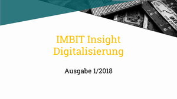 Digitalisierung Whitepaper Dieses Whitepaper ist im Rahmen der Vorlesung Neue Konzepte des Kurses WIMBIT 15C entstanden. Darin werden viele interessante und innovative Themen rund um die Digitalisierung behandelt. Stand 2009 | © WIBI15 | Abdeckungsgrad 50%
Cloud Wiki — Dieses Wiki erklärt zahlreiche Begriffe rund um das Thema »Cloud Computing« und wurde von dem WIBI09-Kurs im Jahr 2012 erstellt. Es ist bestens zur Wiederholung der Cloud Computing Vorlesung im 5. Semester geeignet. Darüber hinaus findest du hier auch weiterführende Informationen. Stand 2009 | © WIBI09 | Abdeckungsgrad 40%
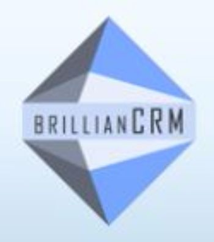 brillianCRM — brillianCRM ist ein Online-Projektmanagement-Spiel, das von IMBIT-Studenten der DHBW für Studenten und Profis entworfen wurde. Ziel ist es, deine Ausbildung im Bereich Projektmanagement für Informationstechnologie zu bereichern. Für mehr Infos schau dir das Teaser-Video an! Stand 2017 | © DHBW Mannheim | Autor WIMBIT12C, WIMBIT13C | Abdeckungsgrad 40%
Introduction to Project Management — Dieser Kurs kombiniert die wesentlichen Elemente des Projektmanagements und der Teamführung in einem Kurs. Der Kurs vermittelt ein tiefergehendes Verständnis für die Verantwortungen von Führungskräften und zeigt dir, wie du dieses Wissen in der Projektumgebung anwenden kannst. Stand 2018 | © University of California | Dauer 4 Wochen
Introduction to Project Management — In diesem Kurs lernst du, wie du deine Projektmanagementfähigkeiten praktisch anwenden kannst, egal ob dein Projekt groß oder klein ist. Der Kurs vermittelt dir wesentliche Kommunikationsfähigkeiten und hilft dir, auch komplexe Projekte erfolgreich zu meistern.© University of Adelaide | Dauer 6 Wochen
brillianCRM — brillianCRM ist ein Online-Projektmanagement-Spiel, das von IMBIT-Studenten der DHBW für Studenten und IT-Profis entworfen wurde. Ziel ist es, deine Ausbildung im Bereich Projektmanagement für Informationstechnologie zu bereichern. Für mehr Infos schau dir das Teaser-Video an! Stand 2017 | © DHBW Mannheim | Autoren WIMBIT12C, WIMBIT13C | Abdeckungsgrad 40%
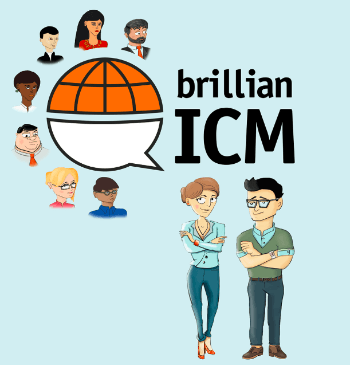brillianICM — brillianICM ist ein interaktives Lernspiel, welches Wissen quer zu allen ICM Schwerpunktthemen abfragt und vertieft. Im Spielverlauf schlüpfst du in die Rolle eines Mitarbeiters im internationalen Umfeld und wirst mit Situationen konfrontiert, in denen du dein erworbenes Wissen über kulturelle Unterschiede und Besonderheiten anwenden musst, um eine erfolgreiche Zusammenarbeit über Ländergrenzen hinweg zu erreichen. Die abgedeckten Themenbereiche (bei wiederholter und aufmerksamer Spielaktivität) sind u.a.: »Interkulturelle Zusammenarbeit und Kommunikation«, »Das Phänomen Kultur«, »Unternehmenskultur und nationale Kultur«, sowie die »Zusammenarbeit in internationalen Teams«. Dieses Serious Game wurde im Jahr 2015 von IMBIT-Studenten im Rahmen eines IT-Projekts entwickelt. Stand 2017 | © DHBW Mannheim | Autoren WIMBIT12C, WIMBIT13C | Abdeckungsgrad 70%
Make brillianIDEAS great again! — Der Kurs WIMBIT16B hatte Ende 2018 die Aufgabe, die bestehende Lernplattform brillianIDEAS weiterzuentwickeln und zu optimieren. Das Ergebnis ist die Plattform, auf der du dich befindest. Stand 2018 | © DHBW Mannheim | Autor WIMBIT16B
Make brillianIDEAS great again! — Der IMBIT Jahrgang 2015 hatte 2018 die Aufgabe, die bestehende Lernplattform brillianIDEAS weiterzuentwickeln und zu optimieren. Das Ergebnis ist die Plattform, auf der du dich befindest. Um ein Gefühl für die Arbeit an einem solchen Projekt zu bekommen, sieh dir das Projektvideo an! Stand 2018 | © DHBW Mannheim | Autor WIMBIT15C
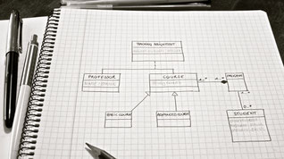 UML Class Diagrams — Hast du dich jemals gefragt wie Softwarearchitekten, Anforderungsingenieure und Business Analysten skizzieren und ihre Pläne für ein Softwaresystem aufbauen? In diesem Informatik-Kurs bekommst du ein tiefes Verständnis für die Klassifikationsdiagramme der Unified Modeling Language (UML), mit denen die konzeptionelle Gestaltung eines Systems visuell dargestellt wird. Du lernst alles über UML-Klassendiagramme, da sich dieser Kurs darauf spezialisiert. Stand 2017 | © edX Inc. | Autor KU Leuven University | Dauer 3 Wochen | Abdeckungsgrad 70%
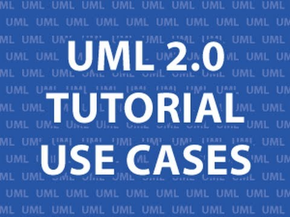 UML 2.0 YouTube Tutorials — Dieses YouTube Tutorial geht über mehrere Videos und umfasst Erklärungen zu verschiedenen UML Diagrammen. UML Basiswissen und die Anwendung von UML wird auf diese Weise trainiert. Das Tutorial ist sehr hilfreich bei der Vorbereitung für die Klausur. Stand 2012 | © Derek Banas | Abdeckungsgrad 70%
Developing International Software — Als IMBIT-Student wirst du in der Arbeitswelt innerhalb internationaler Firmen an der Entwicklung von komplexen Computerprogrammen beteiligt sein. Dieser Kurs versucht dich darauf optimal vorzubereiten. Er besteht aus folgenden drei Teilen: dem Business Case, dem Design und der Entwicklung. Während man die Teile eins und zwei ohne Programmierkenntnisse durchführen kann, erfordert der dritte Teil Programmiererfahrung. Stand 2017 | © Microsoft | Dauer 12 Wochen | Abdeckungsgrad 20%
astah* UML pad — Mit dieser App kannst du das Erstellen von UML′s spielerisch mit einem iOS Gerät üben. Stand 2014 | © Change Vision, Inc. | Abdeckungsgrad 30%
SAP APPHAUS — eine kreative Woche mit Design Thinking — Wir haben das SAP APPHAUS in Heidelberg besucht und einen Grundlagenkurs in Design Thinking absolviert. Stand 2015 | © SAP | Abdeckungsgrad 10%
WolframAlpha - Taschenrechner des Internets — WolframAlpha ist eine intelligente Suchmaschine, die die unterschiedlichsten Themenfelder abdeckt. Im Bereich Mathematik steht dir WolframAlpha als grafischer Taschenrechner mit großem Funktionsumfang zur Seite. Dieser hilft dir somit bei der Bearbeitung von Kurvendiskussionen, die auch bei wirtschaftlichen Problemstellungen Aufschluss geben können. Insofern wirkt dieses Onlinetool unterstützend beim Vertiefen des Wissens im Themenbereich »Analysis« als Teil des IMBIT-Moduls »Analysis und lineare Algebra«. Stand 2017 © Wolfram Alpha LLC | Autor Stephen Wolfram | Abdeckungsgrad 30%
HAW Hamburg - Youtube Kanal von Prof. Edmund Weitz — Prof. Edmund Weitz veranschaulicht auf dem Youtube Kanal der HAW Hamburg verschiedenste mathematische Themen und erklärt sie in kurzen Lernvideos. In seinem Buch »Konkrete Mathematik (nicht nur) für Informatiker« werden zudem mathematische Bereiche, die für Jedermann interessant sind, anhand von vielen Graphiken und Animationen behandelt. Stand 2019 © HAW Hamburg | Abdeckungsgrad %
Animierte Mathematik — 3Blue1Brown ist eine Seite mit Videos animierter Mathematik. Grant Sanderson, der Autor von 3Blue1Brown und Absolvent von Stanford, ist auf sozialen Medien als »@3blue1brown« aktiv. Stand 2018 © Grant Sanderson | Abdeckungsgrad 10%
Mathologer - Youtube Kanal von Ass. Prof. Burkard Polster — Ass. Prof. Burkhard Polster von der Monash University veröffentlicht auf dem Youtube Kanal Mathologer regelmäßig Beweise, Erklärungen und Theorien zu mathematische Themen und erklärt sie in kurzen Lernvideos. Stand 2019 © Mathologer | Ass. Prof. Burkhard Polster | Abdeckungsgrad %
Videoplaylist des Mathematikprofessors Jörn Loviscach — Jörn Loviscach veröffentlicht als Professor der Ingenieurmathematik Videos seiner vergangenen Lehrveranstaltungen. Die »Mathematik 1«-Vorlesungen decken schwerpunktmäßig folgende Themen des IMBIT-Curriculums ab: »Analysis: Funktionen & deren Eigenschaften«, »Ableitungen«, »Grenzwerte« und »Stetigkeit«. »Mathematik 2« behandelt relevante Themen der Linearen Algebra, wie z.B. »Matrizenoperationen«, »Determinante«, sowie »Lineare Gleichungssysteme«. über die Suchfunktion der Website kannst du schnell und unkompliziert Videos zu konkreten Themen und Stichworten finden, zu denen du zusätzliche Erklärungen und Vertiefungen benötigst. Stand 2016 © Prof. Dr. Jörn Loviscach | Abdeckungsgrad 90%
Photomath — Photomath kann (noch) nicht digitalisierte Aufgaben ganz einfach und unkompliziert lösen. Nimm mit dem Handy ein Foto von der Aufgabe auf, die dich beim Lösungsversuch zum Verzweifeln bringt, und lasse dir in Sekundenschnelle den ausführlichen Schritt-für-Schritt Lösungsweg anzeigen! So erhältst du nicht nur die Lösung, sondern auch ein besseres Verständnis der einzelnen Rechenschritte und kannst zukünftig Aufgaben des Themenbereichs »Analysis und lineare Algebra« eigenständig besser bearbeiten. Stand 2017 © Photomath Inc. | Abdeckungsgrad 30%
 MathX3 - Mathe Einschätzungstest
— Vor allem als IMBIT-Neuankömmling kann das Online
Quiz MathX3 interessant für dich sein. In ca. 10
Minuten testest du deinen persönlichen Wissensstand der
Klassenstufen 8 - 11, wobei in vielen Aufgabenstellungen ein
technischer oder praktischer Bezug hergestellt wird. So findest du
heraus, in welchen Bereichen du deine Fähigkeiten noch
ausbauen kannst, um optimal auf die IMBIT-Mathematikvorlesungen
vorbereitet zu sein.
Stand 2008 © DHBW Mannheim, ZeMath Zentrum für
mathematisch-naturwissenschaftliches Basiswissen |
Abdeckungsgrad 30%
MathX3 - Mathe Einschätzungstest
— Vor allem als IMBIT-Neuankömmling kann das Online
Quiz MathX3 interessant für dich sein. In ca. 10
Minuten testest du deinen persönlichen Wissensstand der
Klassenstufen 8 - 11, wobei in vielen Aufgabenstellungen ein
technischer oder praktischer Bezug hergestellt wird. So findest du
heraus, in welchen Bereichen du deine Fähigkeiten noch
ausbauen kannst, um optimal auf die IMBIT-Mathematikvorlesungen
vorbereitet zu sein.
Stand 2008 © DHBW Mannheim, ZeMath Zentrum für
mathematisch-naturwissenschaftliches Basiswissen |
Abdeckungsgrad 30%
Wahrheitstafeltrainer — Mithilfe dieser Online-übung kann die zweiwertige Logik (True/False) anhand des Ausfüllens unterschiedlicher Wahrheitstafeln trainiert werden. Deine Antworten werden sofort korrigiert und du kannst das Schwierigkeitsniveau an deine Lernbedürfnisse anpassen, indem du einzelne Spaltenlösungen vorzeitig aufdeckst. Auf spielerische Art und Weise festigst du dein Wissen im Bereich »Aussageverknüpfungen und Wahrheitstafeln«, welches dem Modulteilbereich »Logik und Algebra« des IMBIT-Curriculums unterzuordnen ist. Stand 2006 © Hochschule Wismar | Autor Jan Schreiber | Abdeckungsgrad 10%
Learn Prolog Now! Online-Kurs — Das allgemeine Wissen über Logik ist dir noch nicht genug und du möchtest tiefer in die logische Programmierung einsteigen? Dann ist dieser textbasierter Prolog-Kurs, der in 12 Kapiteln verschiedene Bereiche der logischen Prolog-Programmierung behandelt, genau das Richtige für dich. Jedes Kapitel umschließt sowohl übungen, die auf Papier durchgeführt werden können, als auch Praxisübungen, die das Installieren eines Prolog-Interpreters erfordern. So vermittelt der Kurs schwerpunktmäßig Kenntnisse im Logik & Algebra Themenbereich »Prädikatenlogik und logisches Programmieren«, geht dabei aber noch mehr in die Tiefe als im Curriculum vorgesehen. Stand 2012 | Autoren Patrick Blackburn, Johan Bos, Kristina Striegnitz | Abdeckungsgrad 10%
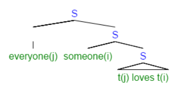 Introduction to Logic — Dieser MOOC bietet einen Einstieg in die Logik im Umfeld der rechnergestützen Informationsverarbeitung und stellt deren Anwendungsfelder vor. Zu den Kompetenzen, die dir im Rahmen der Kursteilnahme vermittelt werden, zählt das Formulieren von logischen Sätzen bzw. logischen Formeln und es wird darauf eingegegangen, wie aus dieser Darstellung von Informationen eine logische Beweisführung möglich wird. Der Kursstoff wird dabei hauptsächlich mithilfe von anschaulichen Informationstexten und übungsaufgaben übermittelt. Folgende Themenbereiche des Logik & Algebra Stoffes des IMBIT-Curriculums werden abgedeckt: »Logische Gesetzmäßigkeiten«, »Normalformen«, »äquivalenz- und Ordnungsrelationen«. Stand 2016 © Stanford University | Dauer 10 Wochen | Abdeckungsgrad 50%
TheSimpleMaths — Hier auf TheSimpleMaths findest du Mathe-Nachhilfe-Videos. Stand 2018 © TheSimpleMaths | Abdeckungsgrad 20%
Statistical Techniques in Business and Economics — Die Website gibt eine Einführung in die Statistik, wobei die Inhalte von der deskriptiven bis zur induktiven Statistik reichen. Die einzelnen Themengebiete werden in insgesamt 20 Kapiteln abgedeckt, zu denen jeweils PowerPoint-Präsentationen mit kompakten Erklärungen unter dem Reiter »More Resources« verfügbar sind. Nach dem Bearbeiten der textbasierten Lernmaterialien kannst du das gewonnene Wissen zu den einzelnen Themen in kapitelgerechten Quizes überprüfen! Stand 2017 © McGraw-Hill Global Education Holdings, LLC. | Autoren Douglas A. Lind, William G. Marchal, Samuel A. Wathen | Abdeckungsgrad 30%
Wolfram Statistics Course Assistant — Diese auf den Statistik-Funktionalitäten von WolframAlpha basierende App ist ein zuverlässiger Unterstützer für den Bereich der deskriptiven Statistik und Wahrscheinlichkeitsrechnung, sowohl für iOS- als auch für Android-User! Hier kannst du zweidimensionale Daten auf unterschiedliche Weise darstellen und veranschaulichen, Aufgaben zur Normal- und Binomialverteilung lösen und Zufallszahlen erzeugen. Dies alles hilft dir dabei Statistik-Aufgaben besser zu lösen und verringert zusätzlich den Zeichenaufwand. Stand 2015 © Wolfram Group LLC | Abdeckungsgrad 30%
Gapminder — Gapminder www.gapminder.org bietet Einblicke in unsere Welt anhand interaktiver Visualisierung verlässlicher Statistiken. Stand 2019 © Gapminder | Abdeckungsgrad 30%
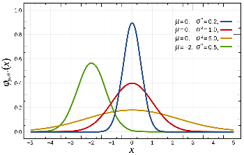 Statistik Formeln & Tabellen — Diese Statistik-App ist ein nützliches Helferlein für die Bearbeitung von Aufgaben ohne Statistik-Software. Sie stellt dir eine umfangreiche Sammlung von statistischen Formeln, sowie die benötigten Werte-Tabellen zur Interpretation der Ergebnisse zur Verfügung, sodass dich kein zeitaufwendiges Blättern im Statistikbuch bei der Bearbeitung von Aufgaben aufhält. Stand 2015 © B. Piskernik | Abdeckungsgrad 30%
Einstieg in die Statistik - Making Decisions Based on Data — Gerade als Statistik-Anfänger bringt dir dieser MOOC grundlegende Methoden für den Umgang mit Daten und deren Auswertung näher. Der Fokus liegt sowohl auf Themen der deskriptiven Statistik, wie zum Beispiel »Visualisierung von Daten« und »Maße statistischer Verteilungen« mit Lerneinheiten zur Wahrscheinlichkeitsverteilung, Normalverteilung und zu Hypothesentests. Stand 2016 © Sebastian Thrun | Dauer 8 Wochen | Abdeckungsgrad 60%
STATx Preparing for the AP Statistics Exam — Dieser Online-Kurs stellt dir die wichtigsten Konzepte und Werkzeuge für das Sammeln, Darstellen und Analysieren von Daten vor. Das Lernangebot ist dabei in die folgenden vier großen konzeptionellen Themen geteilt: »Beschreiben von Mustern und Abweichungen in Datensätzen«, »Durchführung von Studien«, »Erforschung zufälliger Phänomene«, sowie »Statistische Inferenz (Schätzung von Parametern und Hypothesentests)«. Das Videomaterial wird von einer Lehrbuchbeschreibung begleitet, die dir bei der Vor- und Nacharbeit hilft und zur Veranschaulichung dient. Stand 2016 © Tennessee Board of Regents | Dauer 35 Wochen | Abdeckungsgrad 90%
Probability and Statistics — Dieser Stanford MOOC vermittelt den Stoff von einem Semester Statistik mithilfe von anschaulichen Lehrtexten inkl. Grafiken, Beispielen und Multiple-Choice-Quizes, mit denen du dein Verständnis über unmittelbar zuvor vermittelte Inhalte überprüfen kannst. Zentrale Themengebiete sind die Basics der deskriptiven Statistik sowie Wahrscheinlichkeit und Inferenz (Punkt- und Intervallschätzungen & Hypothesentests). Stand 2015 © Stanford University | Abdeckungsgrad 80%
Formelsammlung Statistik — Diese Website beinhaltet eine kommentierte Formelsammlung der deskriptiven und induktiven Statistik und eignet sich besonders für dich als Wirtschaftswissenschaftler. Weitere übungsaufgaben findest du auf der Website von Frau Prof. Dr. Irene Rößler. Stand 2017 © Prof. Dr. Irene Rößler | Abdeckungsgrad 30%
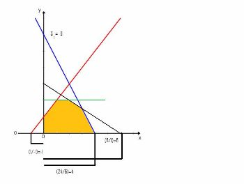 Operations Research - Online Script — Diese digitale Einführung in »Operations Research« stellt ausgewählte Modelle und Algorithmen zur Entscheidungsunterstützung im betriebswirtschaftlichen Sinne vor. Behandelt werden zum Beispiel das Simplexverfahren und die Graphentheorie, sowie Rucksack- und Transportprobleme. Die schrittweise Lösung derartiger Problemstellungen wird anhand von Beispielen demonstriert, die dir konkrete betriebliche Anwendungsfälle näherbringen. Durch die Bearbeitung weiterer übungsaufgaben kannst du die Verfahren weiter verinnerlichen, zumal ausführliche Lösungen zur Selbstkontrolle bereitgestellt werden. Stand 2016 © O. Stuhr | Abdeckungsgrad 80%
Operations Research online lernen — Operations Research (OR) ist geprägt durch die Zusammenführung von mathematischen Verfahren, Wirtschaftswissenschaften und Informatik zum Zwecke der Entscheidungsfindung. In diesem Online-Kurs wird die lineare Optimierung/Programmierung gelehrt, um Teilnehmer zum Lösen von Maximierungs- und Minimierungsproblemen zu befähigen. Kursmaterialien umfassen zahlreiche Dokumente, übungen und 18 Lernvideos, von denen du auch einige kostenlos über den YouTube-Kanal des Anbieters abrufen kannst. Stand 2014 © examio GmbH | Abdeckungsgrad 60%
Discrete Optimization — Diskrete Optimierung ist eine Alternativbezeichnung für lineare ganzzahlige Optimierung, welche ein zentrales Thema des »Operations Research«-Moduls bei IMBIT darstellt. Anhand der Bearbeitung von betrieblichen Fragestellungen in den Bereichen Planung, Fahrzeug-Routing und Ressourcenzuteilung lernst du grundlegende Konzepte und Algorithmen der Constraint-Programmierung, lokalen Suche und ganzzahligen Programmierung. Besonders relevant für dich als IMBIT-Student sind dabei die Kurswochen 5 & 6, welche »Lineare Programmierung« mit Fokus auf das Simplexverfahren und »Gemischt-ganzzahlige Programmierung« behandeln. Stand 2017 © University of Melbourne | Dauer 8 Wochen | Abdeckungsgrad 50%
Greedy Algorithms, Minimum Spanning Trees, and Dynamic Programming — Fokus des MOOCs sind Algorithmen, die im Umfeld der Operations Research Anwendung finden: zum einen werden Greedy Algorithmen (z.B Prims und Kruskals Algorithmus für minimale Spannbäume) behandelt, zum anderen verschiedene Ansätze der dynamischen Programmierung (z.B. das Rucksack Problem und das Branch-and-Bound-Verfahren). Für dich als IMBIT-Student ist insbesondere der Stoff der ersten zwei Kurswochen relevant, da mit Prims und Kruskals Algorithmen Teile des Curriculumthemas »Graphentheorie« abgedeckt werden. Das Wissen im Bereich der Greedy-Algorithmen kannst du zusätzlich in den folgenden zwei Kurswochen noch vertiefen. Stand 2017 © University of Stanford | Dauer 4 Wochen | Abdeckungsgrad 50%
Quiz zu wissenschaftliches Arbeiten — Check dein Wissen mit dem Quiz zum Thema: Wissenschaftliches Arbeiten!
Leitfaden zur Gestaltung wissenschaftlicher Arbeiten
— Der vorliegende Leitfaden unterstützt bei der
inhaltlichen, stilistischen und formalen Gestaltung der
wissenschaftlichen Arbeit. Er verdeutlicht anhand realer Beispiele
typische Probleme beim Verfassen. Neben grundsätzlichen
Anmerkungen zu den häufigsten Fehlern enthalten die meisten
Beispiele auch konkrete Verbesserungsvorschläge.
Stand 2018 © DHBW Mannheim | Abdeckungsgrad 70%
Forschungsmethoden von Herrn Prof. Dr. Thomas Schuster
—Dieses Dokument ist eine Ergänzung zum Leitfaden des
wissenschaftlichen Arbeitens, hier können Vorgehensweisen,
Methoden und Tipps zum Erststellen wissenschaftlicher Arbeiten
nach gelesen werden.
This document is a supplement to the Guide to Scientific Work,
where you can read procedures, methods and tips for writing
scientific papers.
Stand 2019 © DHBW Mannheim
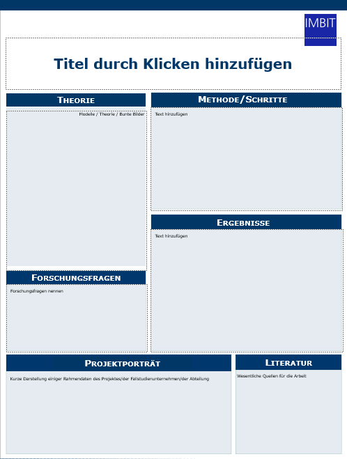
Vorlage für Posterpräsentationen
— Die Vorlage der Posterpräsentation, dient als Unterstützung und
Umsetzungshilfe für das Erarbeiten, einer Posterpräsentation, die
insbesondere für die Vorbereitung der Bachelor Skizze notwendig
ist.
The poster presentation template serves as support and
implementation aid for the development of a poster presentation,
which is particularly necessary for the preparation of the
Bachelor sketch.
Stand 2019 © DHBW Mannheim | Abdeckungsgrad 70%
Citavi
— Citavi ist ein mittlerweile vielfach genutztes Tool, um sich vor
allem bei wissenschaftlichen Arbeiten die Zitation zu erleichtern.
Hierzu können die bekanntesten Zitierweisen, wie z.B. Harvard oder
APA, übernommen werden oder auch eigene Anpassungen gemacht
werden. Die Nutzung des Tools ist für Studenten der DHBW Mannheim
lizenziert und daher kostenlos verfügbar.
Stand 2022 © DHBW Mannheim
Samy Molcho Körpersprache — Samy Molcho, ein israelischer Pantomine-Künstler und Körpersprachenexperte, analysiert Körpersprache in verschiedenen Szenarien und gibt hilfreiche Tips und Tricks für diverse Kommunikationssituationen. Stand 2008 | © Samy Molcho
"Wissenschaftliches Denken, Arbeiten und Schreiben — Der vorliegende Online-Kurs „Wissenschaftliches Denken, Arbeiten und Schreiben“ der Fachhochschule Münster vermittelt alle Grundtechniken wissenschaftlichen Arbeitens von Zitation bis Datenerhebung. Es wird dabei auch über Lerntypen und Arbeitsorganisation gesprochen. Stand 2018 © DHBW Mannheim | Abdeckungsgrad 70%
Selbstlernkurs der Universität Halle-Wittenberg — Dieser Selbstlernkurs der Universität Halle-Wittenberg erklärt wissenschaftliche Denkweisen und gibt Hilfestellungen in Bezug auf die Anfertigung einer wissenschaftlichen Arbeit. Aktuell stehen die Lernmodule „Wissenschaftliches Denken & Arbeiten“, „Grundlagen des Urheberrechts“, „Planung & Vorbereitung der wissenschaftlichen Arbeit“, „Orientierung, Verwaltung & Dokumentation“ und „Präsentation & Visualisierung“ zur Verfügung. Die Module könne separat und unabhängig voneinander bearbeitet werden und nehmen zwischen 80 und 120 Minuten in Anspruch Stand 2019 © DHBW Mannheim | Abdeckungsgrad 70%
Planspiel Wein — In diesem Planspiel übernehmen Sie die Leitung eines Unternehmens, das Trauben einkauft, diese zu Wein verarbeitet und anschließend auf dem Markt anbietet. Wie in einem richtigen Unternehmen übernehmen Sie Kontrolle über die Bereiche Einkauf, Produktion, Vertrieb, Marketing, Personal und Finanzierung. Mit Ihren Entscheidungen müssen Sie sich gegen mehrere Konkurrenten am gleichen Markt durchsetzen und am Ende der Simulation einen möglichst hohen Marktwert Ihres Unternehmens erzielen Stand 2019 © DHBW Mannheim | Abdeckungsgrad 70%
Wolfram Statistics Course Assistants — Diese auf den Statistik-Funktionalitäten von WolframAlpha basierende App ist ein zuverlässiger Unterstützer für den Bereich der deskriptiven Statistik und Wahrscheinlichkeitsrechnung, sowohl für iOS- als auch für Android-User! Hier kannst du zweidimensionale Daten auf unterschiedliche Weise darstellen und veranschaulichen, Aufgaben zur Normal- und Binomialverteilung lösen und Zufallszahlen erzeugen. Dies alles hilft dir dabei Statistik-Aufgaben besser zu lösen und verringert zusätzlich den Zeichenaufwand. Stand 2016 | © Wolfram Group LLC | Abdeckungsgrad 30%
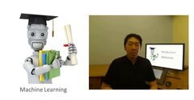 Online-Kurs Stanford - Dieser Online-Kurs von Stanford deckt die Themen Machine Learning, autonomes Fahren, Texterkennung, und vieles mehr ab. Andrew Ng, der Co-Founder von Coursera, CEO/ Gründer von Landing AI und Professor in Stanford, vermittelt hierbei essentielle Informationen, die eine Grundlage für eine Karriere im Machine Learning Bereich ebnen soll.Stand 2019 | © Coursera Inc. | Abdeckungsgrad 50%
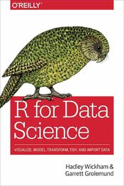 R for Data Science - Der Autor Hadley Wickham vermittelt unter anderem Wissen über die Anwendung von R in der Statistik. Auf seiner Website findet man viele spannende Themen und Links zu seinen GitHub Repositories.Stand 2019 | © Hadley Wickham | Abdeckungsgrad 50%
Internetworking mit TCP/IP — Dieser Kurs bringt dir die technologischen Grundlagen des Internets näher. Er behandelt die physikalischen Grundlagen der Datenübertragung basierend auf funktionalen Prinzipien und Technologien von Local Area Networks (LANs) und Wide Area Networks (WANs). Außerdem lernst du das TCP/IP Reference Model — das Herz des Internets — kennen und steigst somit in die komplexe Welt der Internettechnologien ein. Stand 2014 © Hasso-Plattner-Institut | Prof. Dr. Christoph Meinel | Dauer 6 Wochen | Abdeckungsgrad 40%
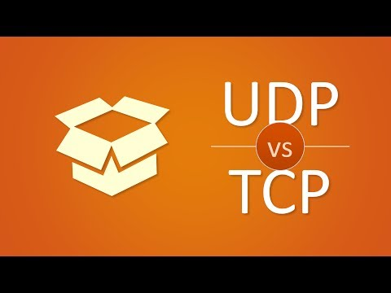 UDP and TCP: Comparison of Transport Protocols — Dieses Lernvideo erklärt die Grundlagen von Transportprotokollen und vergleicht zwei verschiedene Arten von Protokollen: UDP und TCP. Dies hilft dir bei der Wiederholung der Vorlesung Kommunikationssysteme. Stand 2013 © PieterExplainsTech | Pieter Decker | Abdeckungsgrad 30%
Vorlesung zu Communication Systems — Diese Website zeigt alle Skripte aus der Vorlesung Kommunikationssysteme von Prof. Welter aus dem Jahr 2015. Hier lernst du die Grundlagen der Datenübertragung kennen und findest nützliche Links zu weiterführenden Lerninhalten im Themenbereich wie beispielsweise ein Tool zur Kalkulation von IP-Adressen, Subnetz und Ranges. Stand 2015 © Prof. Welter | Abdeckungsgrad 100%
ISO/OSI Modell — Dieses Video erklärt das ISO/OSI Schichtenmodell anhand verschiedener Beispiele. Es wurde erstellt von Studenten der DHBW Villingen-Schwellingen. Es hilft dir nicht nur im Rahmen der Vorlesung Kommunikationssysteme, sondern auch bei mündlichen Prüfungen. Stand 2014 © DHBW Villingen-Schwellingen | Valerie Neff, Julia Hartung, Alexander Meixner, Jonathan Beißwenger | Abdeckungsgrad 40%
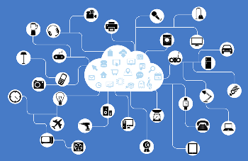 Introduction to Operating Systems — Dies ist ein Einführungskurs in die Thematik Betriebssysteme. Er vermittelt dir die grundlegenden Betriebssystem-Abstraktionen und -Mechanismen sowie deren Implementierungen. Der Kern des Kurses ist die gleichzeitige Programmierung (Threads und Synchronisation), Interprozesskommunikation und eine Einführung in verteilte Betriebssysteme. Der Kurs ist in vier Abschnitte aufgeteilt: (1) Einleitung, (2) Prozess- und Threadmanagement, (3) Ressourcenmanagement und Kommunikation und (4) Verteilte Systeme. Stand 2017 © Georgia Tech | Dauer 8 Wochen | Abdeckungsgrad 60%
Operating Systems Tutorial — Dieses Tutorial zum Thema Betriebssysteme wurde für Informatikstudenten konzipiert und hilft dir dabei, grundlegende und fortgeschrittene Konzepte von Betriebssystemen zu verstehen. Es deckt den Großteil der IMBIT-Vorlesung zu Betriebssystemen ab und behandelt Themen wie Asynchronität, Ereignissteuerung, Koordinierung paralleler Aktivitäten, Prozesse, I/O - Systeme und Virtualisierung. Stand 2017 © Tutorialspoint | Abdeckungsgrad 100%
AmazingSQL — Amazing SQL ist eine kostenlose Software, mit der du SQL-Abfragen in verschiedenen Schwierigkeitsstufen üben kannst. Die Software eignet sich sowohl für Anfänger als auch für Fortgeschrittene. Stand 2017 | © AmazingSQL | Autor Andreas Palosi und Jan Freidinger | Abdeckungsgrad 40%
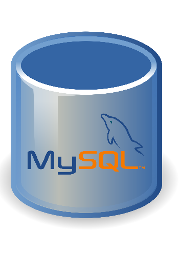 Datenmanagement mit SQL — Im openHPI Kurs »Datenmanagement mit SQL« lernst du die Grundlagen von modernen Datenbanksystemen kennen. Zuerst untersuchst du ihren Aufbau, planst den Entwurf von Datenbanken und schließlich lernst du die weltweit dominierende Abfragesprache SQL kennen. Zum Schluss kannst du in einem kleinen Test das Gelernte überprüfen. Los geht′s! Stand 2017 | © OpenHPI | Autor Prof. Dr. Felix Naumann | Dauer 8 Wochen | Abdeckungsgrad 60%
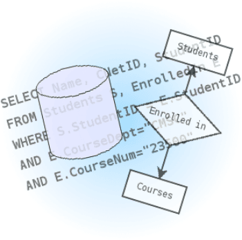 SQL Tutorial — Auf dieser Webseite lernst du, wie man SQL benutzen kann, um auf bestimmte Daten in einer Datenbank zuzugreifen und/oder diese zu verändern. Abschließend kannst du dein Wissen in einem SQL Quiz testen. Die Tutorials eignen sich sehr gut als Klausurvorbereitung, gehen jedoch teilweise über den Inhalt der IMBIT-Vorlesung »Datenbanken« hinaus. Stand 2013 | © w3schools | Abdeckungsgrad 100%
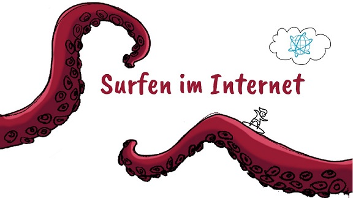 Lernvideo: Surfen im Internet — Wolltest du immer schon wissen, was beim Surfen im Internet genau passiert: Was schickt der Browser zum Webserver? Wie erzeugt der Webserver aktuelle Antworten? Wieso braucht es so viele Requests und Responses? Wer kann sich alles in die Kommunikation zwischen Browser und Webserver einmischen? Was bedeuten Dokumentenobjekt- und Ereignismodell? Das und einiges mehr behandelt unser kurzweiliges Lernvideo zum Surfen im Internet.
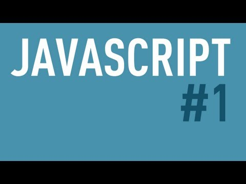 JavaScript Tutorial — In diesem Tutorial lernst du grundlegende Konzepte der Webprogrammierung in JavaScript kennen. Dieses Video ist der erste Teil einer Lernreihe und beinhaltet eine Einführung, eine Integration mit HTML und eine "Hello World"- Programmierung. Viel Spaß! Stand 2017 | © listenwhatisayoh | Abdeckungsgrad 30%
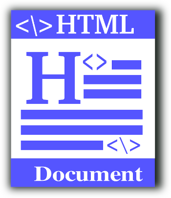 HTML und Javascript Tutorial — Auf dieser Webseite findest du Tutorials zu HTML und JavaScript. Die Tutorials enthalten eine Vielzahl an Beispielen, mit denen du die Grundprinzipien von HTML und JavaScript lernen kannst. Außerdem kannst du mit dem Online HTML Editor eine HTML Seite erstellen und dir das Ergebnis anzeigen lassen. Insgesamt bietet die Webseite eine gute Grundlage für die Klausur zur IMBIT-Vorlesung »Webprogrammierung«. Stand 2017 | © w3schools | Abdeckungsgrad 70%
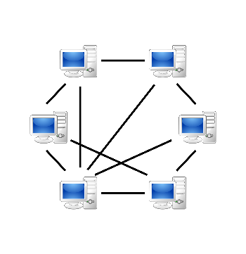 Webtechnologien — Das World Wide Web hat die Welt auf unvorstellbare Weise verändert. Es hat eine neue digitale Welt geschaffen, die eng mit unserer echten Welt verflochten ist. Dadurch ist möglich geworden, was lange undenkbar schien: Weltweite Kommunikation innerhalb von Sekunden, Filme schauen auf dem Smartphone, mit weit entfernten Menschen gemeinsam Spiele spielen oder Fotos ansehen und Einkäufe oder Bankgeschäfte von zu Hause aus erledigen. In diesem MOOC lernst du wie das alles funktioniert. Stand 2017 | Abdeckungsgrad 30%
Machine Learning — Maschinelles Lernen ist die Wissenschaft, Computern beizubringen zu handeln, ohne diese Reaktionen und Handlungen explizit zu programmieren (z.B automatische Gesichtserkennung, Google-Suchvorschläge, etc.). Dieser MOOC vermittelt die effektivsten Machine-Learning-Techniken und du kannst sofort Praxiswissen sammeln indem du diese selbst implementierst. So wird nicht nur auf die theoretischen Grundlagen eingegangen, sondern auch aufgezeigt wie die Techniken effektiv auf konkrete Problemstellungen angewandt werden können. Dieser Kurs wird dich weiterbringen, wenn du über grundlegende mathematische Konzepte hinausgehen willst und mit deinen Mathekenntnissen einen weiteren Bogen zur Informationstechnik spannen möchtest — vielleicht ja sogar im Rahmen einer Praxis- oder Bachelorarbeit? Stand 2017 | © Coursera Inc. | Autor Stanford University | Dauer 11 Wochen | Abdeckungsgrad 30%
Binär-, Dezimal-, Hexadezimal Umrechner — Auf dieser Website kannst du die Umrechnung von Zahlen ins Binär-, Dezimal- und Hexadezimalsystem üben. Die in diese Website integrierte Applikation gibt dir zu jeder beliebigen Zahl in einem Zahlensystem die entsprechende Zahl in einem anderen Zahlensystem aus. Den größten Lernerfolg hast du, wenn du dir Zahlenbeispiele ausdenkst, diese selbst umwandelst und dann dein Ergebnis mit der richtigen Lösung vergleichst. Stand 2012 | © LISSWORX | Autor Matthäus Liß | Abdeckungsgrad 10%
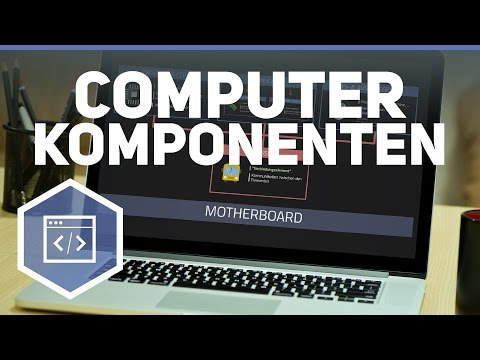 Komponenten eines Computers — Was sind die Grundbestandteile eines Computers? Aus welchen Komponenten ist das Computersystem aufgebaut? Beim Aufbau des Computers unterscheidet man in Hardware und Software, also Betriebssystem und Anwendersoftware. Und was ist ein Motherboard? Hier lernst du die wichtigsten IT-Grundlagen. Auf geht′s! Stand 2017 | © Alexander Giesecke und Nicolai Schork | Abdeckungsgrad 50%
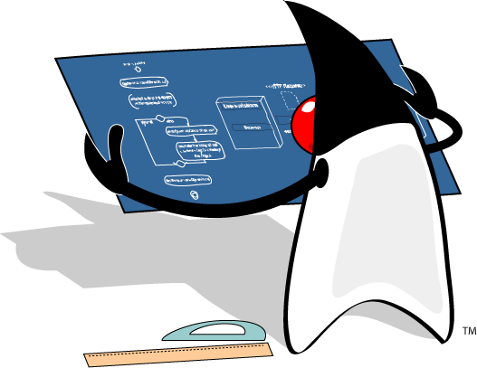 Scalingbits — Dieser Kurs zu den Grundlagen der Java Programmierung wurde von Dr. Stefan Schneider speziell für die IMBIT Kurse erstellt. Die interaktive Plattform stellt in mehreren Kapiteln umfassendes Wissen zu verschiedenen Java-Disziplinen anschaulich dar. Ergänzend werden Übungen und Musterlösungen angeboten. Stand 2010 | © Dr. Schneider
Interaktives Java Tutorial — Dies ist ein Einführungskurs in die Programmiersprache Java. Er behandelt die grundlegenden Konzepte des Programmierens und der Informatik. Den größten Nutzen hast du von dem Kurs, wenn du die Aufzeichnungen interaktiv durchgehst, über die Fragen am Ende einer jeden Seite nachdenkst und sie beantwortest. Es gibt ungefähr 20 Seiten pro Kapitel, die einem das Programmieren Schritt für Schritt näher bringen. Als Programmieranfänger braucht man ca. einen Monat, um alle Aufzeichnungen durchzugehen. Stand 2016 | © Central Connecticut State University | © Bradley Kjell | Abdeckungsgrad 80%
Objektorientierte Programmierung in Java — In diesem openHPI Einsteigerkurs lernst du die Grundlagen der objektorientierten Programmierung kennen und löst gemeinsam mit Detektiv Duke einen mysteriösen Entführungsfall. Voraussetzungen für diesen Kurs sind ein Interesse an Programmierung und ein Computer mit Internetzugang. Vorhergehende Programmiererfahrung ist hilfreich, aber nicht notwendig. Also löse den Fall! Stand 2017 | © OpenHPI | Dauer 3 Wochen | Abdeckungsgrad 80%
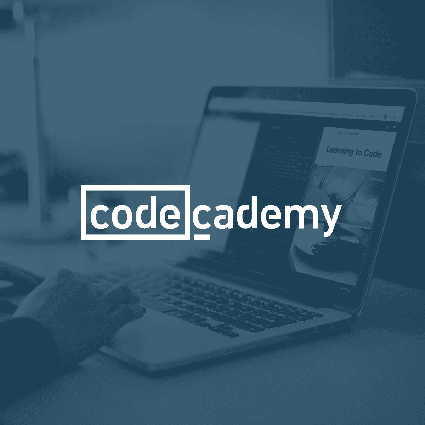 Codecademy — Dies ist eine interaktive Internet-Plattform, die kostenlosen Programmierunterricht in vier Sprachen für viele Programmiersprachen anbietet — darunter auch Java. Stand 2018 | © Codecademy
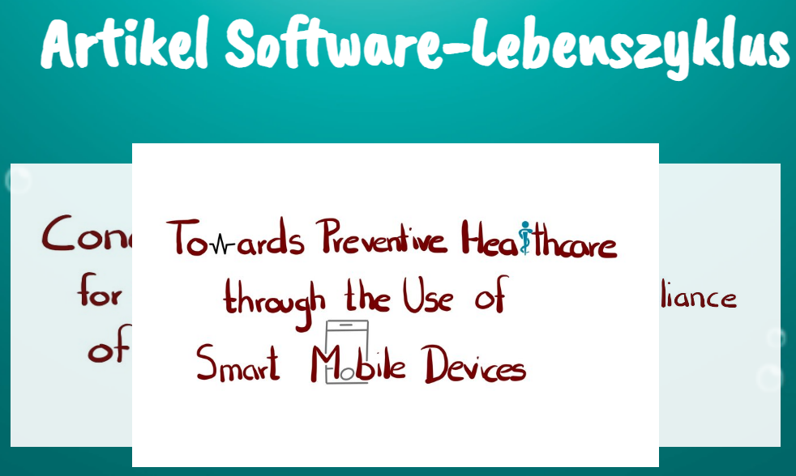 SWLC Papers Continuous Engineering — Stöber durch ausgewählte Papers! Von Studenten, für Studenten! Im Rahmen des Moduls Software-Lifecycle werden von den Studentinnen und Studenten wissenschaftliche Paper zu einem selbst ausgesuchten Thema geschrieben. Dieses muss natütlich in das Thema Continuous (Software) Engineering passen. Im Ersten von zwei Semestern, in denen das Modul unterrichtet wird, stellt die Erstellung eines solchen Papers die Prüfungsleistung dar. Es ist also empfehlenswert, sich diese mal anzusehen. Jahr 2 | Semester 3
Coursera Kurs: Software Development Lifecycle — Coursera ist eine gute Möglichkeit, sich in Form von Kursen Inhalte anzueignen. Auch zu Software-Lifecycle gibt es hierzu einen Kurs der University of Minnesota. Eine kostenlose Teilnahme ist mit einem Coursera Konto möglich. Stand 2019 | © Coursera / University of Minnesota | Abdeckungsgrad 50%
Agile Development Methodology — Agile Entwicklungsmethoden gehen Hand in Hand mit der Softwareentwicklung. Die renommierte Universität Stanford beschreibt auf ihrer Seite die Grundlegenden Elemente einer Agilen Entwicklungsmethode. Stand 2019 | © Stanford University | Abdeckungsgrad 30%
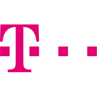 Lifecycle Management für Software & digitale Prozesse — In diesem interessanten Webinar von T-Systems erfahrt ihr, wie man mit Software Lifecycle Management aus der Cloud die Transparenz in den Arbeitsabläufen steigern, unnötige Medienbrüche vermeiden und dadurch Fehlerquellen einschränken könnt. Es wird ausführlich behandelt, wie die Prozesse eines Software-Rollouts aussehen und was zu beachten ist, um Fehler zu vermeiden. Stand 2019 | © T-Systems Multimedia Solutions | Abdeckungsgrad 30%
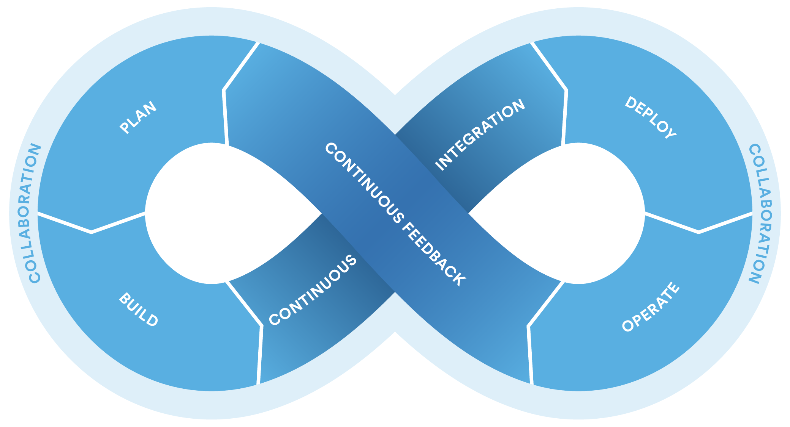 Continuous Engineering — In dem Modul Software-Lifecycle wird nicht nur auf die Software an sich, sondern auch auf die Entwicklung dieser geblickt. Ein zentraler Begriff ist hier das Continuous Engineering. Auf der Seite der IBM findest du einige Informationen darüber. Wenn du auf das Bild klickst, kannst du auch etwas über DevOps erfahren, was direkt mit Continuous Engineering zusammenhängt. Stand 2015 | © IBM / atlassian | Abdeckungsgrad 70%
 Continuous software engineering: A roadmap and agenda
— Dieses Paper, verfasst von Brian Fitzgerald und Klaas-Jan
Stol bildet eine wesentliche Grundlage der Vorlesungsreihe
Software-Lifecycle und deckt weite Teile der Inhalte vollständig
ab. Continuous Software Engineering und dessen einzelne
Bestandteile werden definiert und die Anwendbarkeit erläutert. Die
ISO Norm ISO/IEC 12207:2008 steht hiermit in einem engen
Zusammenhang. Dieses Paper ist in jedem Fall empfehlenswert und
hilfreich für das Lernen und Aneignen von Vorlesungsinhalten. Über
deine Zugangsdaten der Online-Bibliothek ist das Paper kostenlos
verfügbar.
Stand 2015 | © Elsevier Inc. | Abdeckungsgrad 90%
Continuous software engineering: A roadmap and agenda
— Dieses Paper, verfasst von Brian Fitzgerald und Klaas-Jan
Stol bildet eine wesentliche Grundlage der Vorlesungsreihe
Software-Lifecycle und deckt weite Teile der Inhalte vollständig
ab. Continuous Software Engineering und dessen einzelne
Bestandteile werden definiert und die Anwendbarkeit erläutert. Die
ISO Norm ISO/IEC 12207:2008 steht hiermit in einem engen
Zusammenhang. Dieses Paper ist in jedem Fall empfehlenswert und
hilfreich für das Lernen und Aneignen von Vorlesungsinhalten. Über
deine Zugangsdaten der Online-Bibliothek ist das Paper kostenlos
verfügbar.
Stand 2015 | © Elsevier Inc. | Abdeckungsgrad 90%
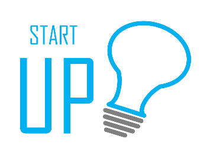 How to Build a Start-Up? — Dieses Wiki erklärt zahlreiche Begriffe rund um das Thema »Cloud Computing« und wurde von dem WIBI09-Kurs im Jahr 2012 erstellt. Es ist bestens zur Wiederholung der Cloud Computing Vorlesung im 5. Semester geeignet. Darüber hinaus findest du hier auch weiterführende Informationen. Stand 2017 | © Udacity Inc. | Dauer 4 Wochen | Abdeckungsgrad 10%
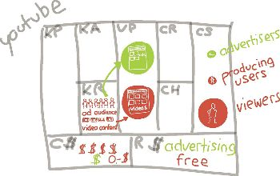 Business Canvas Modelling — In diesem online bereitgestellten Tool kannst du einen Business Canvas erstellen. Das Planungstool kann dich bei der Entwicklung und Überarbeitung von komplexen Geschäftsideen unterstützen. So hast du immer einen Überblick über die Schlüsselfaktoren deines Geschäftsmodells. Stand 2017 | © Proud Sourcing | Abdeckungsgrad 20%
Circular Economy: An Introduction — In diesem MOOC erfährst du wie ein nachhaltiges Wirtschaftssystem funktionieren kann. Dabei geht es um das Wiederverwenden und Wiederverwerten von Produkten und wie daraus Vorteile für das Unternehmen entstehen können. Dieses Thema baut auf dem Bereich Nachhaltigkeit auf, welcher in der Vorlesung »Einführung in die BWL« behandelt wird. Stand 2017 | © TU Delft | Abdeckungsgrad 30%
Umfrage Unternehmensziele — Diese Umfrage beschäftigt sich mit Unternehmenszielen. Durch das Ausfüllen der Umfrage sollen die Inhalte der Vorlesung gefestigt werden. Die Umfrage wurde von Prof. Dr. Bendl im Rahmen der Vorlesung »Einführung in die BWL« entwickelt und hilft dir die verschiedenen Funktionsbereiche im Unternehmen zu verstehen. Stand 2017 | © Prof. Dr. Harald Bendl | Abdeckungsgrad 30%
Umfrage Aktiengesellschaft — Die Umfrage »Aktiengesellschaft« beschäftigt sich mit Aktienkursen, Bilanzposten und vielen anderen Themen und soll die in der Vorlesung gelernten Inhalte wiedergeben. Sie wurde im Rahmen der Vorlesung »Einführung in die BWL« von Prof. Dr. Bendl entwickelt und unterstützt dich beim Lernen. Stand 2017 | © Prof. Dr. Harald Bendl | Abdeckungsgrad 30%
Webinar: Marketing einfach erklärt — Dieses Webinar ist ideal für alle Auszubildenden und Umschüler, für die Marketing prüfungsrelevant ist. Stand 2018 | © GripsCoachTV | Abdeckungsgrad 15%
Fintool - Finanzausbildung für Jedermann - kurz erklärt — Das ist eine videobasierte Internet-Plattform für Finanzausbildung. Diese Plattfrom beinhaltet Kurzvideos von 2, 3, höchstens 4 Minuten für Finanzwissen, in welchen die wesentlichen Grundsätze der Finanz- und Anlagetheorie beigebracht werden. Stand 2017 | © Fintool AG | Abdeckungsgrad 30%
Bilanzierung lernen — Videokurse zu Bilanzierungsgrundlagen. Stand 2018 | © buchhaltung-lernen.com | Abdeckungsgrad 80%
Business Process Management - Learn How to Manage a Process — Dieser Kurs befasst sich, neben den Grundlagen der Modellierung, mit den Themen Analyse, Verbesserung und Veränderung von Geschäftsprozessen. Bei Geschäftsprozessveränderungen sind sowohl die organisatorische als auch die IT-technische Umsetzung relevant. Das Wissen wird dir von erfahrenen Dozenten der Wirtschaftsinformatik von diversen Universitäten (u.a. der Universitäten Saarbrücken, Münster, München und Hamburg) und Dozenten aus der Wirtschaft beigebracht. Stand 2017 | © Open Course World | Autor Kirchner et al. | Dauer 16 Wochen | Abdeckungsgrad 60%
Business Process Management: An Introduction to Process
Thinking
— Dieser MOOC gibt dir eine Einführung in das
Geschäftsprozessmanagement. Er wurde erstellt an der Queensland
University of Technology, einer führenden australischen
Universität, die sich unter den besten 2% der Universitäten
weltweit befindet.
Stand 2017 | © Queensland University of Technology |
Dauer 3 Wochen | Abdeckungsgrad 30%
Human Resources — This course explains what happiness at work looks like, why it matters, and how to cultivate it. It begins by defining happiness and making the case that happiness at work improves the performance of individual employees and organizations as a whole, increasing innovation, productivity, engagement, retention, and the quality of their work. Stand 2017 | © Open Universities Australia Pty Ltd | Dauer 4 Wochen | Abdeckungsgrad 15%
Entrepreneurship and Family Business — This course covers in the chronological order each defining step of an entrepreneurial project. It begins with very personal considerations related to getting to better know yourself better so as to decide if you are ready for the multiple challenges of entrepreneurship. It then deals with creativity in order to provide the right set of tools to find an idea with the right potential to disrupt an existing business. Stand 2017 | © Open Universities Australia Pty Ltd | Dauer 4 Wochen | Abdeckungsgrad 15%
Human Resource Management — Do you have people reporting to you that need managing? Or perhaps you want to consider a career in human resources? Or freshen up your HR knowledge? Stand 2017 | © Coursera | Abdeckungsgrad 15%
Übungsaufgaben Rechnungswesen — Diese Website stellt Aufgaben zu T-Konten, Inventar und Bilanz, sowie Geschäftsfälle mit Lösungen zur Verfügung. Die Aufgabentypen sind dabei angelehnt an IMBIT Vorlesungen und Klausuraufgaben der Finanzbuchhaltung. So kannst du dich gut auf eine Prüfung vorbereiten. Stand 2017 | © Stefan Schweiger | Abdeckungsgrad 50%
Übungsaufgaben Buchungssätze — Auf dieser Website kannst du mit interaktiven Übungen die Aufstellung von Buchungssätzen lernen. Außerdem lernst du, wie man Skonti und Abschreibungen berechnet. Diese Aufgaben helfen dir, die im Unterricht vorgestellten Themen noch einmal zu wiederholen. Stand 2017 | © Stefan Schweiger | Abdeckungsgrad 100%
Buchhaltung-Lernen — Auf dieser Website findest du Informationen zur Erstellung einer Bilanz. Du kannst dir Videos über die verschiedenen Bereiche der Bilanz ansehen und erhältst viele kostenlose Vorlagen zur Aufstellung einer Bilanz. Die Professoren der Hochschule Bad-Honnef helfen dir, die Inhalte der Vorlesung »Bilanzierung« zu wiederholen. Stand 2017 | © Buchhaltung-lernen.com | Abdeckungsgrad 30%
Deloitte E-Learning IFRS und IAS — Dieses Lernspiel beschäftigt sich mit den Rechnungslegungsvorschriften IFRS und IAS . Die Module behandeln jeweils ein eigenes Fachgebiet, z.B. die Abrechnung von Einkommen oder Einkommensbesteuerung. Bereitgestellt wird das Spiel über Zip-Pakete, die man downloaden muss. Nach dem Entpacken kannst du über den Launcher das Modul starten. Dieses Medium eignet sich für das Nachbehandeln der IMBIT Summer School Themen. Stand 2013 | © Deloitte | Abdeckungsgrad 100%
Rechnungswesen üben — Auf diesen Seiten befinden sich ausgewählte, kostenlose Übungsaufgaben zu den einzelnen Teilgebieten des Rechnungswesens. Zu allen Übungsaufgaben werden kostenlose Lösungen bereitgestellt. Stand 2018 | © Fabian Simon | Abdeckungsgrad 30%
KLR Grundlagen — Auf dieser Website findet man Informationen zur Kosten- und Leistungsrechnungsgrundlagen. Stand 2018 | © Rechnungswesen-verstehen.de | Abdeckungsgrad 20%
Gesetzbücher online — Hier findest du Gesetzestexte des Handelsgesetzbuchs, des Bürgerlichen Gesetzbuchs und viele mehr zum Nachschlagen online. Diese Website eignet sich hervorragend, um während der Vorlesung einzelne Gesetze schnell nachzuschlagen oder nachzulesen. Stand 2017 | © juris GmbH | Abdeckungsgrad 40%
Schuldrecht — Vertragsschuldverhältnisse — Diese Online-Vorlesung der Universität Bonn gibt dir eine Einführung in das Schuldrecht und die Vertragsschuldverhältnisse. Es wird erläutert, welche Pflichten durch Verträge begründet werden, wie und wann diese erlöschen und welche Folgen eine Nichterfüllung von Verträgen hat. Das Schuld- und Vertragsrecht sind wesentliche Bestandteile der Rechtsvorlesung und tauchen auch in der abschließenden Klausur wieder auf. Stand 2016 | © Rheinische Friedrich-Wilhelms-Universität | Dauer 50 Stunden | Abdeckungsgrad 30%
Grundzüge des Handelsrechts — Diese Online-Vorlesung gibt dir eine Einführung in das Handelsrecht. Behandelt werden u.a. Themen und Begriffe wie Unternehmer, Kaufmann, Handelsregister, Verträge, Vertragsschluss, Stellvertretung, Prokura, Handlungsvollmacht, Firma, Name und Haftung. Viele dieser Begriffe werden ebenfalls in den Vorlesungen angesprochen. Es lohnt sich also in jedem Fall, sich mit diesen Begriffen im Vorfeld oder auch im Anschluss an die Vorlesung vertraut zu machen. Stand 2016 | © Rheinische Friedrich-Wilhelms-Universität Bonn | Dauer 21 Stunden | Abdeckungsgrad 30%
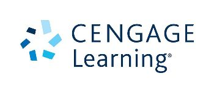 Economics - Students' Resources accompanying the book by N. Gregory Mankiw and Mark P. Taylor — Diese Webseite stellt für dich Lernhilfen zu dem Buch »Economics« von N. Gregory Mankiw und Mark P. Taylor in Form von Übungsaufgaben, Multiple-Choice Fragen und Case Studies für die einzelnen Kapitel und Themenbereiche bereit. Die VWL-Vorlesung bei Prof. Dr. Schuster basiert auf diesem Buch. Daher ist es ratsam, sich die Materialien auf dieser Webseite anzuschauen und zu bearbeiten. Gerade im Hinblick auf die Klausur kann dir dies bei der Vorbereitung und Lernkontrolle helfen. Stand 2015 | © Cengage Learning Inc. | Abdeckungsgrad 80%
Entrepreneurship and Family Business — Dieser MOOC der australischen RMIT Universität behandelt das Thema Unternehmertum. Du erhältst Einblicke in Führungsverantwortlichkeit, Business Pläne und viele weitere Themen. Anhand dieser Videoserie kannst du Teile der Vorlesung »Ausgewählte Aspekte des Managements« wiederholen. Stand 2017 | © Open Universities Australia Pty Ltd | Dauer 4 Wochen | Abdeckungsgrad 15%
 Introduction to Economics: Macroeconomics
— Dieser Kurs ist ein Einführungskurs auf der elementarsten
Ebene, sodass keine Vorkenntnisse der Ökonomie erforderlich sind.
In diesem Wirtschaftskurs lernst du die Hauptkonzepte der
Makroökonomie, wie Bruttoinlandsprodukt, Preislevel, Inflation,
Arbeitslosigkeit, wirtschaftliches Wachstum und Zahlungsbilanz
kennen. Zudem lernst du, wie das Markt Equilibrium und die
Equilibrium Menge aus den Angebots- und Nachfragekurven bestimmt
werden. Gerade zu den Themen Markt Equilibrium, Equilibrium Menge
und Inflation werden gerne Klausurfragen gestellt.
Stand 2017 | © edX Inc. | Dauer 6 Wochen | Abdeckungsgrad
30%
Introduction to Economics: Macroeconomics
— Dieser Kurs ist ein Einführungskurs auf der elementarsten
Ebene, sodass keine Vorkenntnisse der Ökonomie erforderlich sind.
In diesem Wirtschaftskurs lernst du die Hauptkonzepte der
Makroökonomie, wie Bruttoinlandsprodukt, Preislevel, Inflation,
Arbeitslosigkeit, wirtschaftliches Wachstum und Zahlungsbilanz
kennen. Zudem lernst du, wie das Markt Equilibrium und die
Equilibrium Menge aus den Angebots- und Nachfragekurven bestimmt
werden. Gerade zu den Themen Markt Equilibrium, Equilibrium Menge
und Inflation werden gerne Klausurfragen gestellt.
Stand 2017 | © edX Inc. | Dauer 6 Wochen | Abdeckungsgrad
30%
European Central Bank — Auf dieser Webseite der Europäischen Zentralbank (EZB) findest du hilfreiche Artikel zu Themen wie Mindestreservepflicht, Nominal- und Realzinssatz, sowie Währungspolitik. Anhand von Fallbeispielen und erklärenden Abbildungen werden dir die theoretischen Grundlagen näher gebracht. Auch gibt dir diese Seite Aufschluss über die Aufgaben und die Bedeutung der EZB als währungspolitisches Organ. In den VWL-Vorlesungen von Prof. Dr. Schuster ist die EZB ein wichtiges Thema und Grundwissen über diese Einrichtung wird für die Klausur vorausgesetzt. Stand 2017 | © European Central Bank | Abdeckungsgrad 20%
Public Economics — Ziel dieses einführenden Kurses ist es die zentralen Themen der Ökonomie und verwandter Disziplinen aus der Vogelperspektive zu betrachten und Konzepte, Logiken und Ideen zu vermitteln. Das Schwerpunktthema dieses Kurses ist die Rolle der Regierung als Ressourcemanager, der die Märkte korrigiert, ergänzt und verstärkt. Zudem geht es um Themen wie Besteuerung, Regulierung und Politik der öffentlichen Ökonomie. Das durch diesen MOOC vermittelte Wissen findet sowohl in den VWL-Vorlesungen, als auch im 5. und 6. Semester im Rahmen der Vorlesung »International Business Law and International Organizations« Anwendung. Stand 2017 | © Coursera Inc | Dauer 6 Wochen | Abdeckungsgrad 5%
VWL Grundlagen — Auf dieser Seite von Rechnungswesen-Verstehen.de werden die Grundlagen der VWL möglichst verständlich und einfach erklärt. Stand 2018 | © rechnungswesen-verstehen.de | Abdeckungsgrad 50%
BBC News — BBC News ist ein Nachrichtensender des BBCs. Stand 2018 | © BBC News | Abdeckungsgrad 5%
International Project Management - In diesem Kurs werden die Auswirkungen auf das Projektmanagement von Kultur, Sprachvariationen, religiösen, regulatorischen und rechtlichen Praktiken, Technologiepenetration, zeitlicher Orientierung, Geschlechterfragen, Korruption, Ethik, persönlicher Freiheit und politischen Kontexten untersuchrt. Es wird gelernt, wie die Herausforderungen globaler Projekte durch den effizienten Einsatz von Praktiken und Technologien bewältigen werden können. Der Kurs nutzt verfügbare Fallstudien und Beispiele aus Unternehmen, um den Studenten zu helfen, die Fähigkeiten zu verbessern, die sie benötigen, um ein erfolgreiches internationales Projektumfeld zu erkennen und zu fördern. Stand 2019
International Project Management and Future of Work - In diesem Kurs lernen Sie die wichtigsten Instrumente und Methoden des Projektmanagements kennen. Entwickeln Sie Ihre Fähigkeiten in den Bereichen Teamarbeit, Steuerung, Zeitmanagement, Risikomanagement, Kommunikation und Prozessführung. Dies sind die Grundlagen für die Initiierung, Planung, Durchführung, Dokumentation und Überprüfung von Projekten. Das moderne Leben ist digital. Das Management von Projekten in einem modernen Umfeld erfordert die besondere Berücksichtigung der sich ändernden Arbeitsbedingungen, die mit neuen Technologien und globaler Zusammenarbeit einhergehen. Der Kurs führt Sie in einige der zentralen Themen, Fähigkeiten und Einstellungen ein, die Sie auf die Zukunft der Arbeit für ein modernes Projektmanagement vorbereiten. Stand 2019
brillianICM — Dies ist ein interaktives Lernspiel, welches Wissen quer zu allen ICM Schwerpunktthemen abfragt und vertieft. Im Spielverlauf schlüpfst du in die Rolle eines Mitarbeiters im internationalen Umfeld und wirst mit Situationen konfrontiert, in denen du dein erworbenes Wissen über kulturelle Unterschiede und Besonderheiten anwenden musst, um eine erfolgreiche Zusammenarbeit über Ländergrenzen hinweg zu erreichen. Die abgedeckten Themenbereiche (bei wiederholter und aufmerksamer Spielaktivität) sind u.a.: »Interkulturelle Zusammenarbeit und Kommunikation«, »Das Phänomen Kultur«, »Unternehmenskultur und nationale Kultur«, sowie die »Zusammenarbeit in internationalen Teams«. Dieses Serious Game wurde im Jahr 2015 von IMBIT-Studenten im Rahmen eines IT-Projekts entwickelt. Stand 2017 | © DHBW Mannheim | Abdeckungsgrad 70%
Kulturelle Dimensionen des GLOBE-Projekts — Anhand der Navigation in einer interaktiven Lernkarte kannst du mit diesem Tool erfahren, welche Ausprägungen die einzelnen Länder in diversen kulturellen Dimensionen aufweisen, nach denen die Untersuchungen des GLOBE-Projekts durchgeführt wurden. Das gewonnene Wissen hilft dir dabei, Case Studies im internationalen Kontext aus verschiedenen Blickwinkeln heraus zu bearbeiten und zu vielschichtigen Ergebnissen zu kommen. Die GLOBE-Dimensionen sind ein ausgewählter kulturtheoretischer Ansatz, der sowohl Aufschluss über nationale Kultur als auch über Unternehmenskultur der von der Studie erfassten Länder gibt. Stand 2004 (Stand der Studie) | © GLOBE | Abdeckungsgrad 15%
10 Minutes with Geert Hofstede — Geert Hofstede selbst erklärt in kurzen Videos die Unterschiede der von ihm entwickelten Kulturdimensionen. So erhältst du Einblicke in die Gegensätzlichkeit der Dimensionen-Paare und welche Effekte diese in der Praxis haben. Hofstedes Kulturdimensionen vermitteln ein Grundverständnis für den Curriculum-Bereich »Fundamentals in Intercultural Management« und geben Aufschluss über Themen wie »Das Phänomen Kultur«, »Stereotypisierung« und »Unternehmens- und nationale Kultur«. Stand 2014 | © 10 minutes with | Abdeckungsgrad 10%
Working in Teams: A Practical Guide — Dieser MOOC gibt dir Einblicke in die Struktur und den Lifecycle von Teams, sowie in die Rolle des einzelnen Teammitglieds. Des Weiteren werden dir als Kursteilnehmer Werkzeuge und Systeme für eine effektive Zusammenarbeit im Team und für den Umgang mit Konflikten an die Hand gegeben. Der Kurs deckt somit Themenbereiche des ICM Schwerpunktthemas »International Teamwork« ab. Stand 2016 | © edX Inc. | Abdeckungsgrad 15%
Optimizing Diversity in Teams — In diesem MOOC lernst du den Begriff »Diversity« kennen. Darauf aufbauend wirst du dazu befähigt, die Vorteile von diversen Teams zu erkennen und bestmöglich zu nutzen, um gute Perfomance, kreatives Arbeiten und Innovation zu erzielen. Auch auf die Herausforderungen innerhalb diverser Teams wird eingegangen und es werden Konfliktbewältigungsstrategien vorgestellt, um diesen erfolgreich zu begegnen. Folgende Themen des ICM Schwerpunktthemas »International Teams« werden abgedeckt: »Zusammenarbeit in internationalen Teams«, »Interkulturelle Kompetenz« und »Diversitätsmanagement«. Stand 2017 | © cousera | Abdeckungsgrad 20%
Memrise — Die »Memrise« App stellt ein online Lerntool mit Karteikarten dar, welches hauptsächlich Sprachkurse, aber auch Kurse für andere akademische und nicht-akademische Fächer anbietet. Auf spielerische Art und Weise erweiterst du deine Vokabelkenntnisse und kannst diese durch Abfragen überprüfen. Stand 2017 | © Memrise Ltd. | Abdeckungsgrad 50%
Quizlet — Mithilfe dieser App kannst du personalisierte Lernsets erstellen, zu denen du eine beliebige Anzahl an Karteikarten hinzufügen kannst. Die so erstellten virtuellen Karteikarten erleichtern dir das Vokabeln lernen und motivieren dich gleichzeitig dazu, die Rechtschreibung der Wörter zu üben. Stand 2017 | © Quizlet Inc. | Abdeckungsgrad 50%
Vitalingua — Die Übungen auf dieser Website richten sich nach dem europäischen Referenzrahmen und entsprechen je nach Bedarf den Niveaus A1, A2 (Anfänger), B1, B2 (Mittelstufe) und C1, C2 (Fortgeschrittene). Es werden dir Möglichkeiten geboten, die Grammatikregeln zu wiederholen und deren Anwendung mithilfe von Lückentexten zu üben. Stand 2017 | © vitalingua | Abdeckungsgrad 40%
Aktuelle IMBIT-Partnerunternehmen
Übersicht aller dualen Partnerunternehmen der DHBW Mannheim auf
| Infos für Unternehmen & Studieninteressierte |

|
Ein interaktives Whiteboard - oder eine "digitale Tafel" - ist eine elektronische Projektionswand bzw. eine Weißwandtafel, die in Verbindung mit einem Computer und einem Projektor/Beamer funktioniert. Häufig werden Whiteboards innerhalb von Vorlesungen eingesetzt. Die Vorteile dieses Lernmediums liegen auf der Hand: Bessere Präsentationsmöglichkeiten von Unterrichtsinhalten, ein hohes Maß an Motivation und eine Vielzahl von Interaktionsmöglichkeiten. Letztendlich können mit Hilfe von interaktiven Whiteboards alle Medien wie Text, Grafik, Bilder, Animationen, Töne und Filme präsentiert werden.
Ein virtuelles Klassenzimmer bezeichnet Lehrszenarien, in denen das Internet als Kommunikationsmedium für räumlich getrennte Lehrende und Lernende genutzt wird. Durch den Einsatz von Lernplattformen, Webcams, VoIP oder gar Whiteboards kann sowohl eine Sicht-, Hör- und Sprechverbindung der Beteiligten als auch ein gemeinsames und gleichzeitiges Bearbeiten von Dokumenten ermöglicht werden. Deshalb eignet sich dieses Lernform besonders um einzelne Lerninhalte zu verinnerlichen unabhängig von der Distanz. Die DHBW nutzt aktuell BigBlueButton als Virtual Classrooms, dort hat man die Möglichkeit für Gruppenarbeiten in Breakout-Rooms zu gehen.
Serious Games sind digitale Spiele bzw. spielähnliche
Anwendungen die nicht ausschließlich auf Unterhaltung
abzielen, sondern auch ernsthafte Wissensvermittlung und
Weiterbildung zum Ziel haben. Im Unterschied zum klassischen
Lernspiel sind bei Serious Games Entertainment- und
Bildungsaspekte in sehr ausgewogenem Maße vorhanden und so eng
miteinander verwoben, sodass das Spiel nicht auf Phasen der
direkten Übermittlung des Lernstoffs folgt, sondern im
Gegenteil das Lernen zu jedem Zeitpunkt im Spiel ermöglicht
wird. Hier
www.springer.com/gp/book/9783319402154
kannst du außerdem einen IMBIT-Artikel zu Serious Games im
Tagungsband der GALA-Konferenz 2015 finden (Springer LCNS
9599, Seite 42ff).
Folien zum Vortrag von Dr. Frauke Mörike auf der GALA
Jahrestagung 2015 in Rom:
GALA 2015 Rom, brillianCRM.pdf
Artikel zu Serious Games in der Festschrift anläßlich der
Emeritierung von Prof. Dr. Beedgen:
Serious Games, Festschrift Beedgen.pdf
BrillianICM ist ein interaktives Lernspiel, welches Wissen quer zu allen ICM Schwerpunktthemen abfragt und vertieft. Im Spielverlauf schlüpfst du in die Rolle eines Mitarbeiters im internationalen Umfeld und wirst mit Situationen konfrontiert, in denen du dein erworbenes Wissen über kulturelle Unterschiede und Besonderheiten anwenden musst, um eine erfolgreiche Zusammenarbeit über Ländergrenzen hinweg zu erreichen. Die abgedeckten Themenbereiche (bei wiederholter und aufmerksamer Spielaktivität) sind u.a: "Interkulturelle Zusammenarbeit und Kommunikation", "Das Phänomen Kultur", "Unternehmenskultur und nationale Kultur", sowie die "Zusammenarbeit in internationalen Teams". Dieses Serious Game wurde im Jahr 2015 von IMBIT-Studenten im Rahmen eines IT-Projekts entwickelt. Stand: 2017 © DHBW Mannheim Autor: WIMBIT12C, WIMBIT13C
BrillianCRM ist ein Online-Projektmanagement-Spiel, das von IMBIT-Studenten der DHBW für Studenten und IT-Profis entworfen wurde. Ziel ist es, deine Ausbildung im Bereich Projektmanagement für Informationstechnologie zu bereichern. Für mehr Info's schau dir unser Teaser-Video an! Stand: 2017 © DHBW Mannheim Autor: WIMBIT12C, WIMBIT13C
Dieses Lernspiel beschäftigt sich mit den Rechnungslegungsvorschriften IFRS und IAS . Die Module behandeln jeweils ein eigenes Fachgebiet, z.B. die Abrechnung von Einkommen oder Einkommensbesteuerung. Bereitgestellt wird das Spiel über Zip-Pakete, die man downloaden muss. Nach dem Entpacken kannst du über den Launcher das Modul starten. Dieses Medium eignet sich für das Nachbehandeln der IMBIT Summer School Themen. Stand: 2013 © Deloitte Autor: Deloitte
Blended Learning (dt. Integriertes Lernen) ist eine Mischform unterschiedlicher Lernprinzipien. Es vereint zumeist Elemente von Präsenzunterricht, E-Learnings und Selbstbildung, wobei das Verhältnis dieser Elemente zueinander variieren kann. Während E-Learnings und Arbeitsmaterialien beim selbständigen Vor- und Nachbereiten des Präsenzunterrichts helfen, dienen gelegentliche Face-to-Face Sitzungen hauptsächlich als Unterstützung im Umgang mit den Lernmaterialien. So kann der Lernprozess einerseits effektiv und flexibel gestaltet werden, z.B. durch E-Learnings mit anpassbaren Schwierigkeitsniveaus, und beinhaltet andererseits auch Elemente der sozialen Interaktion sowie die Möglichkeit das Wissen im Gespräch zu vertiefen.
Planspiele sind eine bewährte Technik im Business-Management-Training, da sie Kompetenzen im Umfeld des strategischen Managements schulen. Es handelt sich dabei konkret um interaktive Spiele, bei denen Teilnehmer in einer Simulation mit möglichst realitätsnahen Problemstellungen und Aufgaben konfrontiert werden, die es zu lösen gilt.Spieler schlüpfen in Rollen und sollen durch kreatives, selbständiges und organisiertes Handeln, sowie durch kritische Reflexion und Wechsel der Perspektive Entscheidungsprozesse durchleben und die ihrer Rolle zugedachten Aufgaben erfüllen. Teilnehmern wird so die Möglichkeit gegeben in risikofreiem Umfeld gelernte Theorien in der Praxis anzuwenden und sich durch Feedback dabei zu verbessern. Auch die Fähigkeit zur erfolgreichen Interaktion in Teams wird durch die Rollenkonstellationen im Planspiel trainiert.
Virtuelle Welten sind Lernumgebungen innerhalb deren die Anwender in Form eines virtuellen Charakters, (Avatar) handeln und mit anderen Nutzern kommunizieren können. Dieser Avatar verfügt über bestimmte Merkmale und Fähigkeiten, die erweitert und verändert werden können. Genutzt werden virtuelle Welten unter anderem für Rollenspiele, Gruppenarbeiten, virtuelle Klassenzimmer sowie zur kooperativen Gestaltung von Objekten. Studien haben bewiesen, dass sich die verstärkte Präsenzerfahrung in virtuellen Welten positiv auf das Engagement und die informellen Lernprozesse der Studierenden auswirken. Mit virtuellen Welten können verschiedenen Lerntypen und -stile unterstützt werden, allerdings hängt der erfolgreiche Einsatz stark von der Usability und den technischen Rahmenbedingungen, wie Hardware oder Netzwerk, an der Universität bzw. auf Seiten des Anwenders ab.
Die Abkürzung MOOC steht für Massive Open Online Course und bezeichnet einen internetbasierten Kurs, der sich an viele Teilnehmer richtet (engl. "massive": "riesig, enorm") und offen für alle ist (engl. "open"). Die Inhalte werden in Form von Videosequenzen, Skripten und ergänzenden Lernmaterialien vermittelt. Der Austausch der Teilnehmenden findet in Foren und sozialen Netzwerken statt. Die Wissensüberprüfung erfolgt meist durch Multiple-Choice-Tests. Man unterscheidet zwischen xMoocs und cMoocs. Während ein xMOOC eher lehrerzentriert ist, ist der cMOOC eher lernerzentriert, informell und den sozialen Medien verpflichtet.
Wie man ein Start-Up aufbaut
Dieser MOOC stellt die verschiedenen Schritte zur Gründung
eines Start-Ups vor. Du erhälst Einblicke in Strategien,
wie man eine Idee zu einem erfolgreichen Start-Up
entwickeln kann. Der Kurs ist kostenlos, in englischer
Sprache verfügbar und wiederholt die Inhalte der Vorlesung
"Einführung in die BWL". |
Circular Economy: An Introduction
In diesem MOOC erfährst du, wie ein nachhaltiges
Wirtschaftssystem funktionieren kann. Dabei geht es um das
Wiederverwenden und Wiederverwerten von Produkten und wie
daraus Vorteile für das Unternehmen entstehen können.
Dieses Thema baut auf dem Bereich Nachhaltigkeit auf,
welcher in der Vorlesung "Einführung in die BWL" behandelt
wird. |
||
Digital and Social Media Marketing
Dieser auf Englisch bereitgestellte MOOC beschäftigt sich
mit digitalem Marketing. Anhand von Beispielen aus der
Industrie erhälst du einen Einblick, wie eine
Online-Marketing-Strategie aufgestellt werden kann. |
Human Resources
In diesem MOOC erfährst du mehr über die verschiedenen
Bereiche des Personalmanagements. In die verschiedenen
Module sind kurze Quizes integriert, die den
Lernfortschritt dokumentieren. Die in englischer Sprache
verfügbaren Vorträge behandeln beispielsweise den Umgang
mit virtuellen Teams und Recruitment. Der MOOC ist für
Studierende geeignet, die eine Beschäftigung im
Personalwesen planen und vertieft die Vorlesung
"Ausgewählte Aspekte des Managements" im 6. Semester. |
||
Entrepreneurship and Family Business
Dieser MOOC der australischen RMIT Universität behandelt
das Thema Unternehmertum. Du erhälst Einblicke in
Führungsverantwortlichkeit, Business Pläne und viele
weitere Themen. Anhand dieser Videoserie kannst du Teile
der Vorlesung "Ausgewählte Aspekte des Managements"
wiederholen. |
Human Resource Management: HR for People Managers SpecializationDieser MOOC beschäftigt sich mit dem Human Resource Management. Unter anderem werden die Bereiche Recruiting, Einstellung und die Gehaltstsrategien untersucht. Anhand dieser Videos kannst du die Inhalte der Management-Vorlesung nochmals wiederholen. Stand: 2017 © Coursera Autor: University of Minnesota |
||
Working in Teams: A Practical GuideDieser MOOC gibt dir Einblicke in die Struktur und den Lifecycle von Teams, sowie in die Rolle des einzelnen Teammitglieds. Des Weiteren werden dir als Kursteilnehmer Werkzeuge und Systeme für eine effektive Zusammenarbeit im Team und für den Umgang mit Konflikten an die Hand gegeben. Der Kurs deckt somit Themenbereiche des ICM Schwerpunktthemas "International Teamwork" ab. Stand: 2016 © edX Inc. Autor: The University of Queensland Dauer: 6-8h |
Optimizing Diversity on TeamsIn diesem MOOC lernst du den Begriff "Diversity" kennen. Darauf aufbauend wirst du dazu befähigt, die Vorteile von diversen Teams zu erkennen und bestmöglich zu nutzen, um gute Perfomance, kreatives Arbeiten und Innovation zu erzielen. Auch auf die Herausforderungen innerhalb diverser Teams wird eingegangen und es werden Konfliktbewältigungsstrategien vorgestellt, um diesen erfolgreich zu begegnen. Folgende Themen des ICM Schwerpunktthemas "International Teams" werden abgedeckt: "Zusammenarbeit in internationalen Teams", "Interkulturelle Kompetenz" und "Diversitätsmanagement". Stand: 2017 © cousera Autor: University of Pennsylvania Dauer: 8-16h |
||
Introduction to LogicDieser MOOC bietet einen Einstieg in die Logik im Umfeld der rechnergestützen Informationsverarbeitung und stellt deren Anwendungsfelder vor. Zu den Kompetenzen, die dir im Rahmen der Kursteilnahme vermittelt werden, zählt das Formulieren von logischen Sätzen bzw. logischen Formeln und es wird darauf eingegegangen, wie aus dieser Darstellung von Informationen eine logische Beweisführung möglich wird. Der Kursstoff wird dabei hauptsächlich mithilfe von anschaulichen Informationstexten und Übungsaufgaben übermittelt. Folgende Themenbereiche des Logik & Algebra Stoffes des IMBIT-Curriculums werden abgedeckt: "Logische Gesetzmäßigkeiten", "Normalformen", "Äquivalenz- und Ordnungsrelationen". Stand: 2016 © Coursera Inc Autor: Stanford University Dauer: 10 Wochen |
Machine LearningMaschinelles Lernen ist die Wissenschaft, Computer beizubringen zu handeln, ohne diese Reaktionen und Handlungen explizit zu programmieren (z.B automatische Gesichtserkennung, Google-Suchvorschläge etc.). Dieser MOOC vermittelt die effektivste Maschine-Learn-Techniken und du kannst sofort Praxiswissen sammeln indem du diese selbst implementierst. So wird nicht nur auf die theoretischen Grundlagen eingegangen, sondern auch aufgezeigt wie die Techniken effektiv auf konkrete Problemstellungen angewandt werden können. Dieser Kurs wird dich weiterbringen, wenn du über grundlegende mathematischen Kozepte hinausgehen willst und mit deinen Mathekenntnissen einen weiteren Bogen zur Informationstechnik spannen möchtest - Vielleicht ja sogar im Rahmen einer Praxis- oder Bachelorarbeit? Stand: 2017 © Coursera Inc. Autor: Stanford University Dauer: 11 Wochen |
||
Einstieg in die StatistikGerade als Statistik-Anfänger bringt dir dieser MOOC grundlegende Methoden für den versändinsvollen Umgang mit Daten und deren Auswertung näher. Der Fokus liegt sowohl auf Themen der deskriptiven Statistik, wie zum Beispiel "Visualisierung von Daten" und "Maße statistischer Verteilungen", wie auch aus der schließenden Statistik mit Lerneinheiten zur Wahrscheinlichkeitsverteilung, Normalverteilung und Hypothesentests. Stand: 2016 © Udacity, Inc. Autor: Sebastian Thrun Dauer: 8 Wochen |
Preparing for the AP* Statistics ExamDieser Online-Kurs stellt dir die wichtigsten Konzepte und Werkzeuge für das Sammeln, Darstellen und Analysieren von Daten vor. Das Lernangebot ist dabei in die folgenden vier großen konzeptionellen Themen geteilt: "Beschreiben von Mustern und Abweichungen in Datensätzen", "Durchführung von Studien", "Erforschung zufälliger Phänomene", sowie "Statistische Inferenz (Schätzung von Parametern und Hypothesentests)". Das Videomaterial wird von einer Lehrbuchbeschreibung begleitet, die dir bei der Vor- und Nacharbeit hilft und zur Veranschaulichung dient. Stand: 2016 © edX Inc. Autor: Tennessee Board of Regents Dauer: 35 Wochen |
||
Probability and StatisticsDieser Standford MOOC vermittelt den Stoff von einem Semester Statistik mithilfe von anschaulichen Lehrtexten inkl. Grafiken, Beispielen und Multiple-Choice-Quizes, mit denen du dein Verständnis zu umittelbar zuvor vermitteltem Lernstoff überprüfen kannst. Zentrale Themengebiete sind die Basics der deskriptiven Statistik, sowie Wahrscheinlichkeit und Inferenz (Punkt- und Intervallschätzungen & Hypothesentests). Stand: 2015 © Stanford University Autor: Stanford University |
Operations ResearchOperations Research (OR) ist geprägt durch die Zusammenführung von mathematischen Verfahren, Wirtschaftswissenschaften und Informatik zum Zwecke der Entscheidungsfindung. In diesem Online-Kurs wird die lineare Optimierung/Programmierung gelehrt, um Teilnehmer zum Lösen von Maximierungs- und Minimierungsproblemen zu befähigen. Kursmaterialien umfassen zahlreiche Dokumente, Übungen und 18 Lernvideos, von denen du auch einige kostenlos über den Youtube-Kanal des Anbieters abrufen kannst. Stand: 2014 © examio GmbH Autor: Daniel Lambert, wiwiweb.de |
||
Discrete OptimizationDiskrete Optimierung ist eine Alternativbezeichnung für lineare ganzzahlige Optimierung, welche ein zentrales Thema des "Operations Research"-Moduls bei IMBIT darstellt. Anhand der Bearbeitung von betrieblichen Fragestellungen in den Bereichen Planung, Fahrzeug-Routing und Ressourcenzuteilung lernst du grundlegende Konzepte und Algorithmen der Constraint-Programmierung, lokalen Suche und ganzzahligen Programmierung. Besonders relevant für dich als IMBIT-Student sind dabei die Kurswochen 5 & 6, welche "Lineare Programmierung" mit Fokus auf das Simplexverfahren und "Gemischt-ganzzahlige Programmierung" behandeln. Stand: 2017 © Coursera Inc. Autor: University of Melbourne Dauer: 8 Wochen |
Greedy Algorithms, Minimum Spanning Trees, and Dynamic ProgrammingFokus des MOOCs sind Algorithmen, die im Umfeld der Operations Research Anwendung finden: Zum einen werden Greedy Algorithmen (z.B Prims und Kruskals Algorithmus für minimale Spannbäume) behandelt, zum anderen verschiedene Ansätze der dynamischen Programmierung (z.B. das Rucksack Problem und das Branch-and-Bound-Verfahren). Für dich als IMBIT-Student ist insbesondere der Stoff der ersten zwei Kurswochen relevant, da mit Prims und Kruskals Algoritmus Teile des Curriculumthemas "Graphentheorie" abgedeckt werden. Das Wissen im Bereich der Greedy-Algoritmen kannst du zusätzlich in den folgenden zwei Kurswochen noch vertiefen. Stand: 2017 © Coursera Inc. Autor: University of Stanford Dauer: 4 Wochen |
||
Internetworking with TCP/IPDieser Kurs bringt dir die technologischen Grundlagen des Internets näher. Er behandelt die physikalischen Grundlagen der Datenübertragung basierend auf funktionalen Prinzipien und Technologien von Local Area Networks (LANs) und Wide Area Networks (WANs). Außerdem lernst du das TCP/IP Reference Model - das Herz des Internets - kennen und steigst somit in die komplexe Welt der Internettechnologien ein. Stand: 2014 © Hasso-Plattner-Institut Autor: Prof. Dr. Christoph Meinel Dauer: 6 Wochen |
Einführung in BetriebssystemeDies ist ein Einführungskurs in die Thematik "Operating Systems". Er vermittelt dir die grundlegenden Betriebssystem-Abstraktionen, -Mechanismen und deren Implementierungen. Der Kern des Kurses ist die gleichzeitige Programmierung (Threads und Synchronisation), Interprozesskommunikation und eine Einführung in verteilte Betriebssysteme. Der Kurs ist in vier Abschnitte aufgeteilt: (1) Einleitung, (2) Prozess- und Threadmanagement, (3) Ressourcenmanagement und Kommunikation und (4) Verteilte Systeme. Stand: 2017 © Georgia Tech Autor: Udacity Dauer: 8 Wochen |
||
Datenmanagement mit SQLIm openHPI Kurs "Datenmanagement mit SQL" lernst du die Grundlagen von modernen Datenbanksystemen kennen. Zuerst untersuchst du ihren Aufbau, planst den Entwurf von Datenbanken und schließlich lernst du die weltweit dominierende Abfragesprache SQL kennen. Zum Schluss kannst du in einem kleinen Test das Gelernte überprüfen. Los geht´s! Stand: 2017 © OpenHPI Autor: Prof. Dr. Felix Naumann Dauer: 8 Wochen |
Objektorientierte Programmierung in JavaIn diesem openHPI Einsteigerkurs lernst du die Grundlagen der objektorientierten Programmierung kennen und löst gemeinsam mit Detektiv Duke einen mysteriösen Entführungsfall. Voraussetzungen für diesen Kurs sind ein Interesse an Programmierung und ein Computer mit Internetzugang. Vorhergehende Programmiererfahrung ist hilfreich, aber nicht notwendig. Also löse den Fall! Stand: 2017 © OpenHPI Autor: OpenHPI Dauer: 3 Wochen |
||
Web-TechnologienDas World Wide Web hat die Welt auf unvorstellbare Weise verändert. Es hat eine neue digitale Welt geschaffen, die eng mit unserer echten Welt verflochten ist. Dadurch ist möglich geworden, was lange undenkbar schien: Weltweite Kommunikation innerhalb von Sekunden, Filme schauen auf dem Smartphone, mit weit entfernten Menschen gemeinsam Spiele spielen oder Fotos ansehen und Einkäufe oder Bankgeschäfte von Zuhause aus erledigen. In diesem MOOC lernst du, wie das alles funktioniert. Stand: 2017 © OpenHPI Autor: OpenHPI Dauer: 8 Wochen |
|
Introduction to Economics: MacroeconomicsDieser Kurs ist ein Einführungskurs auf der elementarsten Ebene, sodass keine Vorkenntnisse der Ökonomie erforderlich sind. In diesem Wirtschaftskurs lernst du die Hauptkonzepte der Makroökonomie, wie Bruttoinlandsprodukt, Preislevel, Inflation, Arbeitslosigkeit, wirtschaftliches Wachstum und Zahlungsbilanz kennen. Zudem lernst du, wie das Markt Equilibrium und die Equilibrium Menge aus den Angebots- und Nachfragekurven bestimmt werden. Gerade zu den Themen Markt Equilibrium, Equilibrium Menge und Inflation werden gerne Klausurfragen gestellt. Stand: 2017 © edX Inc. Autor: Seoul National University Dauer: 6 Wochen |
|
Public EconomiesZiel dieses einführenden Kurses ist es, die zentralen Themen der Ökonomie und verwandter Disziplinen aus der Vogelperspektive zu betrachten und Konzepte, Logiken und Ideen zu vermitteln. Das Schwerpunktthema dieses Kurses ist die Rolle der Regierung als Ressourcenallokator, der die Märkte korrigiert, ergänzt und verstärkt. Zudem geht es um Themen wie Besteuerung, Regulierung und Politik der öffentlichen Ökonomie. Das durch diesen MOOC vermittelte Wissen findet sowohl in den VWL-Vorlesungen, als auch im 5. und 6. Semester im Rahmen der Vorlesung "International Business Law and International Organizations" Anwendung. Stand: 2017 © Coursera Inc. Autor: National Research University Higher School of Economics Dauer: 6 Wochen |
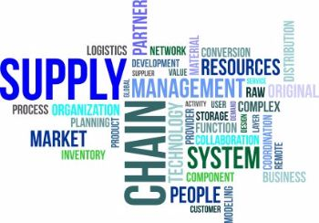 |
Supply Chain Management SpecializationDiese Kurssammlung bietet dir eine Einführung in die faszinierende Welt des Supply Chain Managements. Wenn du diese Supply Chain Management Kurse abgeschlossen hast, wirst du ein besseres Verständnis für die Komplexität haben, mit der die Unternehmen in der heutigen global vernetzten Wirtschaft konfrontiert sind. Die Kurssammlung besteht aus vier grundlegenden Kursen in Logistik, Betrieb, Planung und Beschaffung, gefolgt von einem Capstone-Kurs in Supply Chain Management-Strategie, in dem du echte Business Cases löst und Gelerntes anwendest. Es ist auch möglich, die Kurse jeweils einzeln zu absolvieren. Stand: 2017 © Coursera Inc. Autor: Rutgers Business School Dauer: 4 Wochen |
|
Supply Chain ManagementMit dieser Kurssammlung gewinnst du Fachkompetenzen im wachsenden Bereich des Supply Chain Managements durch ein innovatives Online-Programm bestehend aus fünf Kursen und einer Capstone-Prüfung am Ende. Diese Kurse fördern dein Verständnis für Supply-Chain-Analytik, Design, Technologie, Dynamik und End-to-End-Supply-Chain-Management. Der Umfang dieser Kurse geht deutlich über das in der Vorlesung benötigte Wissen hinaus. Die Kursreihe ist dennoch sehr empfehlenswert für interessierte Studenten auf diesem Gebiet. Stand: 2017 © edX Inc. Autor: Massachusetts Institute of Technology Dauer: 8-14 Wochen |
International LawDieser MOOC vermittelt, wie und wer das internationale Recht aufsetzt, von wem es geachtet werden muss und wo es seine Anwendung findet. Außerdem beantwortet dieser Kurs die Frage, was passiert, wenn bindende Regeln gebrochen werden und inwieweit es möglich ist, Gerechtigkeit in dieser Welt durchzusetzen. Als Ergänzung zur Vorlesung von Prof. Dr. Büchner und zur Klausurvorbereitung ist er sehr zu empfehlen. Stand: 2017 © edX Inc. Autor: Université catholique de Louvain (UCL) Dauer: 8 Wochen |
||
European Business Law: Doing Business in EuropeDieser Kurs ist der erste von insgesamt drei zusammenhängenden Kursen und gibt dir einen Einblick in das europäische Wirschaftsrecht. Die Kursserie umfasst die Betrachtung von grundlegenden Strukturen und Prinzipien der Europäischen Union sowie die Thematisierung von verschiedenen Fachgebieten in deren Rechtsbereich. Jeder einzelne Kurs vermittelt dir ein Verständnis für die Gesetze und Richtlinien, die den Markt innerhalb der Europäischen Union regeln. Stand: 2017 © Coursera Inc. Autor: Lund University Dauer: 6 Wochen |
UML Class Diagrams for Software EngineeringHast du dich jemals gefragt, wie Softwarearchitekten, Anforderungsingenieure und Business Analysten skizzieren und ihre Pläne für ein Softwaresystem aufbauen? In diesem Informatik-Kurs bekommst du ein tiefes Verständnis für die Klassifikationsdiagramme der "Unified Modeling Language" (UML), mit denen die konzeptionelle Gestaltung eines Systems visuell dargestellt wird. Du lernst alles über UML-Klassendiagramme, da sich dieser Kurs darauf spezialisiert. Stand: 2017 © edX Inc. Autor: KU Leuven University Dauer: 3 Wochen |
||

|
Project ManagementDies ist ein MOOC von der Indian Institute of Technology Kanpur bereitgestellt auf Class Central. Es soll Projektmanagement-Basiswissen vermitteln und eignet sich zum Wiederholen einiger Teilaspekte des Projektmanagements. Stand: 2017 © Indian Institute of Technology Kanpur Autor: Indian Institute of Technology Kanpur Dauer: 8 Wochen |
ProjektmanagementProf. Marc Opresnik, Professor an der Universität Sankt Gallen, hat in Zusammenarbeit mit der Hochschule Lübeck diesen MOOC entwickelt. Hier werden die Grundlagen des Projektmanagements vermittelt. Inhalte sind: "Einführung in das Projektmanagement", "Projektorganisation","Projektphasen" und "Kommunikation - Fachübergreifende Softskills". Für alle Kursaktivitäten sollten ca. 2 Stunden pro Woche eingeplant werden. Zum Abschluss gibt es eine Teilnahmebescheinigung und ein Zertifikat. Stand: 2015 © Prof. Marc Opresnik, Stefanie Herbst Autor: Prof. Marc Opresnik, Stefanie Herbst Dauer: 6 Wochen |
|
IT-Recht für Software-EntwicklerZukünftig bist du vielleicht Software-Ingenieur, Gründer oder Unternehmer eines IT-Unternehmens. In diesen Positionen begegnet man verschiedenen rechtlichen Themen. Die wichtigsten Themenbereiche sind Verträge, Urheberrecht, Markenrecht, Patentrecht und Datenschutz. Diese werden dir in einem zweiwöchigen Kurs von anerkannten, spezialisierten Rechtsanwälten auf diesem Gebiet nähergebracht. Stand: 2016 © Dr. Brandi-Dohrn, Prof. Czychowski Autor: Dr. Brandi-Dohrn, Prof. Czychowski Dauer: 4 Wochen |
Innovation and IT ManagementDie Verwaltung von IT und Innovation erfordert gute Skills in der Entscheidungsfindung. In diesem MOOC lernst du, wie man Entscheidungen im Zusammenhang mit folgenden Themen trifft: Konkurrenz in der IT, Verwaltung von digitalen Netzwerken und Sicherheit, Umgang mit einer immer größer werdenden IT-Landschaft, die Entwicklung von Software, die Verwaltung von Projekten sowie ethische Aspekte der IT. Auf der Lernplattform EDX hat dieser Kurs weitestgehend sehr gute Bewertungen erhalten. Stand: 2016 © Indian Institute of Management Autor: Prof. Dr. Rahul De’ Dauer: 4 Wochen |
||
Developing International SoftwareAls IMBIT-Student wirst du in der Arbeitswelt innerhalb internationaler Firmen an der Entwicklung von komplexen Computerprogrammen beteiligt sein. Dieser Kurs versucht, dich darauf bestmöglichst vorzubereiten. Er besteht aus folgenden drei Teilen: dem Business Case, dem Design und der Entwicklung. Während man die Teile eins und zwei ohne Programmierkenntnisse durchführen kann, erfordert der dritte Teil Programmiererfahrung. Stand: 2017 © Microsoft Autor: Microsoft Dauer: 12 Wochen |
Business Process ManagementDieser Kurs befasst sich, neben den Grundlagen der Modellierung, mit den Themen Analyse, Verbesserung und Veränderung von Geschäftsprozessen. Bei Geschäftsprozessveränderungen sind sowohl die organisatorische als auch die IT-technische Umsetzung relevant. Das Wissen wird dir von erfahrenen Dozenten der Wirtschaftsinformatik von diversen Universitäten (u.a. der Universitäten Saarbrücken, Münster, München und Hamburg) und Dozenten aus der Wirtschaft beigebracht. Stand: 2017 © Open Course World Autor: Kirchner et al. Dauer: 16 Wochen |
||
Business Process Management: an Introduction to Process ThinkingDieser MOOC gibt dir eine Einführung in das Geschäftsprozessmanagement. Er wurde erstellt an der Queensland University of Technology, einer führenden australischen Universität, die sich unter den besten 2% der Universitäten weltweit befindet. Stand: 2017 © Queensland University of Technology Autor: Queensland University of Technology Dauer: 3 Wochen |
Hasso-Plattner-InstitutMachen Sie jetzt mit bei openHPI, der Internet-Bildungsplattform des Potsdamer Hasso-Plattner-Instituts. Bei openHPI können Sie in einem weltweiten sozialen Lernnetzwerk an interaktiven Online-Kursen zu verschiedenen Themen der Informationstechnologie (IT) teilnehmen. |
Für eine aktive Verarbeitung des Lerninhaltes im Gedächtnis ist, neben der Wiederholung und den Lernerfolgskontrollen, eine Kommunikation über den Lerninhalt wichtig. Dadurch kommt es indirekt zu einer Wiederholung des Gelernten und damit zu einer weiteren Verankerung im Gehirn. Aus der Wiederholung ergibt sich, dass die Kommunikation nicht ausschließlich für den kommunikativen Lerntyp bedeutend ist. Der Chat stellt hierbei eine Variante der synchronen Kommunikation dar, die dabei hilft, das Gelernte zu verfestigen.
Foren sind meist Bestandteile von Online-Communities, in denen zwischen Teilnehmern Fragen, Antworten, Meinungen und Hinweise ausgetauscht werden. Somit kann man sich in einem Forum durch Interaktion mit Anderen weiterbilden. Neben der Möglichkeit selbst Fragen zu stellen, kann auch das Suchen vergangener ähnlicher Fragen und deren Beantwortung Aufschluss über die eigene Fragestellung geben. Verschlagwortung der Beiträge sowie Foren zu Fokusthemen (z.B. Tech Foren) können bei der gezielten Suche nach Antworten helfen. Oft geben auch Bewertungen und Kommentare der Teilnehmer Aufschluss über die Qualität der Beiträge. Im Gegensatz zu Chats findet hier eine asynchrone Kommunikation statt, das heißt, die Reaktion anderer Forenmitglieder erfolgt zeitversetzt.
Ein sogenanntes Social Network stellt Online-Communities einen virtuellen Raum zur Verügung, in dem Mitglieder auf verschiedene Art und Weise interagieren können. Insofern fungieren sie auch als Forum, in dem Fragen beantwortet werden und gemeinsame Diskussionen zur Wissensbildung führen können. Außerdem können über Social Media Informationen schnell und für einen großen Empfängerkreis bereitgestellt werden: Zeitungen und Zeitschriften besitzen beispielsweise Profile, über die sie aktuelle Artikel und Neuigkeiten verbreiten. Außerdem können Firmen über Produkte und Dienstleistungen informieren. Profile, die mit eigenen Interessen und Informationsbedarf übereinstimmen, können verfolgt oder 'geliked' werden, sodass Neuigkeiten automatisch übermittelt werden. Je nach Quelle und bereitstellendem Profil ist allerdings zu beachten, dass die veröffentlichen Informationen oft als subjektiv eingefärbt einzustufen sind.
Microblogging, wie etwa Twitter, eignen sich hervorragend um "häppchenweise" wissen zu vermitteln, wie etwa kurze Fakten.
Ein Weblog ist ein Logbuch im Web – ein Web-Tagebuch - in das man Beiträge aller Art hineinschreiben kann. Ein Weblog (kurz Blog) besteht im Grunde aus ganz „normalen” Webseiten, die im Gegensatz zu den gewohnten statischen HTML-Seiten bei jedem Aufruf dynamisch aus einer Datenbank erzeugt werden. Diese Blogs erlauben Interaktivität durch Kommentierungsmöglichkeiten. Es kann sich durchaus lohnen, einen Weblog während des Studiums zu pflegen um Gelerntes zu festigen. Außerdem gibt es Anderen die Möglichkeit von eigenen Erfahrungen zu profitieren.
Das Führen von Lerntagebüchern ist eine bewährte Methode, die eigene Lernpraxis zu dokumentieren, zu erkunden, zu überprüfen und möglicherweise zu verändern. Lerntagebücher werden auch im Ablauf von universitären Lehrveranstaltungen eingesetzt, um die persönliche Auseinandersetzung von Studierenden mit Lehrinhalten und Lehrzielen zu dokumentieren und zu reflektieren. Diese Methode ist vor allem für solche Lehrveranstaltungen geeignet, in denen es darum geht, eigene Erfahrungen und Einstellungen zu aktualisieren und sich mit ihnen kritisch auseinanderzusetzen. Auch lassen sich die kognitiven Ziele der Lehrveranstaltung wesentlich stärker "personenbezogen" gestalten (vgl. Stangl 1998).
Bei der Lernform Spiel geht es darum, bestimmte Verhaltensweisen und Entscheidungsmuster von Menschen nachzuvollziehen und den Umgang mit Konflikten zu üben. Somit wird erfahrungsbezogenes Lernen ermöglicht. Mithilfe des Spiels werden Wahrnehmungen erweitert und bestimmte Verhaltensmuster diskutiert und reflektiert.
Teste dein Wissen! Mach die Quizze! Es gibt Quizze für viele Fächer. Jedes Quiz wird dynamisch generiert, so wird das Spielen nie langweilig! Außerdem gibt es natürlich auch Punkte.
Im Planspiel Wein führst du eine virtuelle Winzerei. Im Laufe des Spiels musst du dich sowohl um den Vertrieb, die Produktion und die Lagerung, als auch das Personalwesen und die Finanzierung kümmern. So vereint das Planspiel viele verschiedene Bereiche des IMBIT-Studiums und hilft dir Erfahrung im Management eines Unternehmens zu sammeln. Stand: 2017 © Dr. Martin Brodeck Autor: Dr. Martin Brodeck
Das kompetitive Industrieplanspiel TOPSIM – General Management ist eine anspruchsvolle Management Simulation, welche die komplexen Zusammenhänge eines produzierenden mittelständischen Unternehmens in der Drucker- und Kopierer Branche abbildet. In der Rolle der Geschäftsführung triffst du als Teilnehmer strategische und operative Entscheidungen in den Unternehmensbereichen Marketing, Vertrieb, Forschung und Entwicklung, Einkauf, Fertigung, Personal und Verwaltung. Dabei erlernst du, strukturiert mit großen Informationsmengen umzugehen und die Reichweite deiner Entscheidungen abzuschätzen. Stand: 2017 © TATA Interactive Systems GmbH Autor: TATA Interactive Systems GmbH
Unter Computer-Based-Training (CBT) versteht man computerunterstützte Lernprogramme, die inhaltlich abgeschlossene Lehrmaterialien enthalten. Diese können auch offline verwendet werden, was den Einsatz in Gebieten mit schlechter Internetverbindung ermöglicht. Darin liegt auch der Unterschied zum Web-Based-Training (WBT), in dem die Lernmaterialien online bereitgestellt werden. Außerdem können die Dozenten und Teilnehmer über das Internet kommunizieren.
Ein Wiki ist ein Medium, das durch seine offene Struktur für viele Anwendungsfälle geeignet sein kann. Es ist vergleichbar mit der Universalität einer Wandtafel, wobei das Wiki gleichzeitig eine Archivfunktion beinhalten kann. Im Gegensatz etwa zu Content-Management-Systemen ist ein Wiki flexibler, da die Strukturierung der Daten kaum vorgegeben ist. Es ist ein zukunftsweisendes System, das die Medienkompetenz der Studierenden wie Dozent:innen stärkt. Auch Wikipedia, das wohl bekannteste und größte Wiki, kann aktiv zum Lernen genutzt werden. Quelle
Podcast ist ein zusammengesetztes Kunstwort aus den Begriffen iPod und Broadcast und meint Audio- und Videobeiträge, die über das Internet zum Download bereitgestellt werden. Nach dem Herunterladen können Interessenten die veröffentlichten Beiträge zu jeder beliebigen Zeit und an jedem beliebigen Ort anhören und ansehen. Podcasts können über verschiedene Feed-Formate abonniert werden (bspw. RSS-Feed).
PlayerFM ist eine Multi-Plattform Podcast App, die auf einen Blick Podcasts zu beliebigen Themen von verschiedenen Anbietern und Plattformen zusammenstellt. Die hier ausgewählten Podcasts geben dir einen vielfältigen Einblick in den spannenden Anwendungsbereich des Faches Ethnologie von verschiedensten Instituten und Persönlichkeiten. Die dadurch erworbenen Kenntnisse können dein Wissen im Bereich "Intercultural Management" erweitert. Stand: 2019 © Bitte beachten, dass Player FM nur Informationen anzeigt, die in öffentlichen RSS-Feeds verfügbar sind und somit Inhalte, die in jeder Podcast-App sichtbar und abspielbar sind. Audio wird direkt von den Servern des Publishers über ein domänenübergreifendes Audio-Tag bereitgestellt.
Unter Augmented Reality versteht man die computergestützte Erweiterung der Wahrnehmung der Realität. Dabei können beispielsweise Bilder oder Vidoes über Einblendungen oder Überlagerungen so dargestellt werden, als wären diese in der Realität zu sehen. Zur Darstellung der Augmented Reality wird meistens eine Kamera, Software und GPS, sowie verschiedene Sensoren verwendet. Mithilfe dieser können beispielsweise Kamerabilder mit Informationen zu Sehenswürdigkeiten oder Straßennamen ergänzt werden.
Mit Learning-on-Demand werden Studierende zielbezogener auf unmittelbar bevorstehende Themen und Aufgaben vorbereitet. Diese Lernform kann nicht nur zeit-, sondern auch ortsunabhängig in Anspruch genommen werden. Die Ortsunabhängigkeit birgt die Gefahr, dass das Lernen aufgrund störender Umgebungseinwirkungen unterbrochen wird. Daneben besteht das Risiko, dass die Studierenden zunehmend nur unter Zeitdruck und sehr oberflächlich lernen, da sie erst mit dem Lernen beginnen, wenn die Notwendigkeit gegeben ist. Tendenziell sorgt Learning-on-Demand aber für einen effektiven und effizienten Transfer der erlernten Inhalte.
Als Lernfilm bezeichnet man einen für Unterrichtszwecke produzierten Film. Dieser soll schulische Lernprozesse unterstützen und wird von online Medienzentren verliehen und vertrieben. Der Lernstoff soll filmisch vermittelt werden. Dabei liegt der Schwerpunkt auf der Übermittlung von Wissen und nicht der Darstellung vom Emotionen oder Handlungen. Lernfilme sind ebenso unter der englischen Bezeichnung Tutorial bekannt und im Internet auffindbar.
Eine Simulation ist eine möglichst realitätsnahe Abbildung der Wirklichkeit. Der Mensch lernt am besten in natürlichen Umgebungen, sodass man versucht, den Lernprozess mit Simulationen zu unterstützen. Beispielsweise werden diese dazu eingesetzt, Szenarien durchzuspielen, bei denen Menschen zu Schaden kommen könnten. Durch eine virtuelle Lernumgebung soll das Lernen unterstützt werden.
Interaktive E-Books erweitern die Textinhalte der E-Books um multimediale Inhalte wie Audios und Videos. Der Leser interagiert mit den Inhalten beispielsweise via Mausklick, drag-and-drop oder durch weitere Benutzeraktionen.
Auf der digitalen Lernplattform brillianIDEAS finden Sie alles Wesentliche zum Lehrangebot von IMBIT, der Wirtschaftsinformatik mit internationaler Ausrichtung an der Dualen Hochschule Baden-Württemberg Mannheim, sowie jede Menge dazu passende online Studienangebote inkl. zweier Serious Games und eines umfangreichen Quizzes.
Im Rahmen des IT-Projekt haben auch die WIMBIT19-Kurse die Gelegenheit genutzt, brillianIDEAS unter Betreuung von Prof. Mayr voranzutreiben. Eine neu gestaltete »Wie dual bin ich«-Seite fasst alle Informationen für Studieninteressierte an zentraler Stelle zusammen – für Schulabsolventen, Studienwechsler oder Berufstätige: Selbsteinschätzung zum dualen Studium, Podcast zum Studienverlauf und dem Leben in Mannheim, Videos zu den häufigsten IMBIT-Fragen, aktuelle Liste der Ausbildungspartner etc. Die Plattform besitzt jetzt eine Suchfunktion und Audiohilfestellung. Das Quiz wurde komplett neu entwickelt und durch ein Rollen- und Bewertungskonzept erweitert. Im Impressum finden sich Tipps zur Navigation; die »easter eggs« muss man aber selbst finden.
Auch wir, die beiden WIMBIT18-Kurse, haben uns im Rahmen des IT-Projekts im Winter 2020 mit der brillianIDEAS-Lernplattform beschäftigt. Unter der Leitung von Prof. Mayr konnten wir das E-Mail-Problem bei den Serious Games lösen, Fortschritte bei der Nutzerverwaltung im Quiz erzielen und die Abhängigkeit von JQuery Framework um einen signifikaten Anteil reduzieren. Dadurch haben wir es geschafft wichtige technische Unstimmigkeiten zu beheben. Die Nutzung der Lernplattform wurde durch das Einbinden neuer Mikroanimationen wie bei der Navigationsbar intuitiver. Darüber hinaus wurde die visuelle Darstellung der Lernvideos und Whitepaper vereinheitlicht und um neue Inhalte erweitert.
Als die nun mittlerweile fünfte Gruppe, die sich im Rahmen des IT-Projekts mit der brillianIDEAS-Plattform befasst, hat sich der WIMBIT17B-Kurs unter Leitung von Prof. Mayr hauptsächlich um die Performance der Seite gekümmert und diese merklich verbessert. Diverse technische Fehler und Ungereimtheiten wurden identifiziert und gelöst. Ab jetzt ist die komplette Seite mit sämtlichen neuen Browsern voll kompatibel, die Quizzes sind visuell ansprechender als zuvor und die Responsivität, vor allem bei der Anzeige des Curriculums und der Lernvideos, wurde deutlich erhöht. Zudem wurde die E-Mail Funktion im brillianCRM repariert.
Im Rahmen des IT-Projekts im dritten Studienjahr führt der WIMBIT16C-Kurs unter Leitung von Professor Mayr die brillianIDEAS-Lernplattform fort und ergänzt wesentliche Funktionen: Das Quiz zu den IMBIT Lehrinhalten ist zur besseren Nutzung auf Mobiltelefonen auf responsives HTML-Design umgestellt und erlaubt jetzt auch Auswertungen; die Quiz-Anmutung setzt nun konsequent das Oktopus-Motiv »Unterwasserwelt« um. Ein wesentliches Augenmerk gilt der Codequalität und der Stabilität von Front- und Backend; zu diesem Zweck wird unter anderem eine automatisierte Continuous Delivery Lösung implementiert. Die online Quellen zu den Lehrveranstaltungen des IMBIT Curriculums und die Quizze sind aktualisiert.
Der WIMBIT16B-Kurs hat brillianIDEAS auf eine alternative Cloudplattform umgezogen und zusätzlich Quizze zu den IMBIT-Lehrinhalten bereitgestellt.
Im Zuge des IT-Projektes 2018, unter Leitung von Professor Mayr, erweitert der WIMBIT15C-Kurs die brillianIDEAS-Plattform für digitales Lernen. Im Laufe des Projektes hat der WIMBIT15C-Kurs die Seite aktualisiert und die User Experience weiter optimiert. Neu hinzugekommen sind unter anderem die IMBIT-Vorlesungsmodule nach neuem Curriculum ab Jahrgang 2018/19, Informationen zu den Praxiseinsätzen sowie ein Selbsttest zum dualen Studium – Wie dual bin ich?.
Im Frühjahr 2017, initiiert von dem IMBIT-Studiengangsleiter Prof.
Mayr, entwickelte der IMBIT14C-Kurs der DHBW das neue Lernportal
»brillianIDEAS«.
Dieses bündelt zahlreiche digitale Lernmöglichkeiten, ebenso wie die
Ergebnisse der vorangegangenen IT-Projekte, die SeriousGames
»brillianICM« und »brillianCRM«. Sowohl aktuelle als auch ehemalige
IMBIT Studierende haben nun die Möglichkeit ihre Kenntnisse durch
Lernmedien wie MOOCs oder die neu geschaffenen Whiteboardvideos zu
vertiefen und diese mittels kurzer Testaufgaben auf spielerische Art
und Weise zu überprüfen. Auch zukünftige IMBIT Studierende und
andere Interessenten können sich mit »brillianIDEAS« über Themen und
Schwerpunkte rund um das IMBIT Studium informieren.
Wir wünschen euch viel Spaß beim Ausprobieren!
Angaben gemäß § 5 TMG und Kontakt für Auskunftsersuchen nach DSGVO:
Studiengang IMBIT, DHBW Mannheim
www.mannheim.dhbw.de/wi-imbit
harald.bendl@dhbw-mannheim.de
Coblitzallee 1 – 9, D-68163 Mannheim
Wir übernehmen keine Gewähr für die Aktualität, Richtigkeit und Vollständigkeit der bereitgestellten Informationen. Haftungsansprüche sind grundsätzlich nach § 8–10 TMG ausgeschlossen, sofern kein nachweislich vorsätzliches oder grob fahrlässiges Verschulden vorliegt. Alle Angebote sind freibleibend und unverbindlich. Wir behalten uns ausdrücklich vor, Teile der Seiten oder das gesamte Angebot ohne gesonderte Ankündigung zu verändern, zu ergänzen, zu löschen oder die Veröffentlichung zeitweise oder endgültig einzustellen.
Beim Besuch unseres Webauftritts werden einige technisch-organisatorische Angaben wie IP-Adresse, Webbrowser, Uhrzeit etc. durch die Serversoftware erfasst; wir setzen nur technisch erforderliche Cookies. Einige wenige Daten werden erhoben, wenn Sie sich zur Nutzung unseren Serious Games und Quizze anmelden, damit wir Sie beim nächsten Besuch wieder erkennen und den Spielstand zuordnen können. Es steht Ihnen frei, sich mit Pseudonym und einer nur zu diesem Zweck beschafften E-Mail-Adresse anzumelden. Falls Sie von einem Spieleführer, üblicherweise dem Dozenten einer Lehrveranstaltung, zu einem Serious Game oder Quiz eingeladen werden, kann dieser Ihren Spielefortschritt einsehen und beeinflussen. Wie in den Angaben zum Copyright aufgeführt, verwendet unserer Webauftritt Ressourcen dritter Anbieter, was Datenerfassung durch diese Stellen zur Folge haben kann.
Wir beachten in allen Publikationen die Urheberrechte und greifen bevorzugt auf selbst erstellte Grafiken, Tondokumente, Videosequenzen und Texte zurück. Das Copyright für die selbst erstellten Objekte bleibt bei den Autoren; für eine Verwendung dieser Objekte in anderen elektronischen oder gedruckten Publikationen holen Sie bitte unsere Zustimmung ein.
Es gilt ausschließlich das maßgebliche Recht der Bundesrepublik Deutschland. Diese Nutzungshinweise sind als Teil des Internetangebotes zu betrachten, von dem aus auf diese Seite verwiesen wurde.
Apache Tomcat, Express.js, jenkins, MySQL, jQuery, jQuery Easy UI, JS Cookie Framework, Caveat Brush, Tinos, Lato, Vimeo, Youtube, Pixabay, pngimg, OpenStreetMap, Vue.js und what3words . Podcast-Jingle by Muzaproduction from Pixabay.
Die Übersicht der akutell angebotenen IMBIT-Ausbildungsplätze stammt aus der -Datenbank der DHBW-Mannheim.
Apropos…
Vertreten Sie ein Unternehmen mit Standort in Deutschland und haben Interesse an einer Ausbildungspartnerschaft mit der Dualen Hochschule Baden-Württemberg, so freuen sich die Studiengangsleitungen oder Rektorate an einem der neun DHBW Studienakademien über einen Kontakt mit Ihnen.
Die folgenden Funktionen können über die Tasten oder durch das Klicken auf die Zeilen aktiviert werden.
| Taste/Geste | Funktion |
|---|---|
| Pfeiltaste links | Menüauswahl nach links |
| Pfeiltaste rechts | Menüauswahl nach rechts |
| Pfeiltaste oben | Launchbar einblenden |
| Pfeiltaste unten | Launchbar ausblenden |
| Wischen links | Menüauswahl nach links |
| Wischen rechts | Menüauswahl nach rechts |
| E | Echolot |
| M | Toneffekte bei Interaktion |
| S | Suchfunktion (experimentell) |
Social Networks